import matplotlib.pyplot as plt
import numpy as np
import seaborn as snsIntroducción a la teoría de optimización
Gradiente descendente, convexidad, restricciones y métodos numéricos globales
ImportantIdea central
La optimización permite formular rigurosamente la búsqueda de la mejor solución dentro de un conjunto de alternativas factibles. En machine learning, esta idea aparece de manera transversal, desde el ajuste de parámetros mediante el algoritmo de gradiente descendente hasta la resolución de problemas restringidos, convexos y de tipo black-box donde la información de derivadas no siempre está disponible.
6.1 Introducción
Dado que los algoritmos de machine learning son implementados por medio de un computador, las correspondientes formulaciones matemáticas suelen expresarse por medio de métodos de optimización numérica. Esta sección describe los métodos numéricos básicos para el entrenamiento de modelos de machine learning. El entrenamiento de este tipo de modelos, con frecuencia, consiste en la búsqueda de un buen conjunto de parámetros, y la noción de ”buen conjunto” se determina mediante la función objetivo en un modelo probabilístico, de los cuales veremos ejemplos concretos en secciones posteriores. Dada una función objetivo, buscar su “mejor valor” es, por tanto, un problema de optimización.
En esta sección cubriremos dos ramas principales referidas a la optimización de funciones continuas, las cuales se resumen fundamentalmente en problemas no restringidos y restringidos. Asumiremos, sin perder generalidad, que nuestra función objetivo es diferenciable, y por lo tanto, tenemos acceso a su gradiente en cada punto de su dominio, a fin de encontrar su valor máximo o mínimo. Por convención, en machine learning, intentamos buscar el mínimo valor de la mayoría de las funciones objetivo; es decir, el ”mejor valor” al que nos referimos previamente corresponde a dicho valor mínimo. Intuitivamente, y en ese mismo contexto, la búsqueda del “mejor valor” equivale a buscar los ”valles” en el gráfico de nuestra función objetivo (algo que, naturalmente, tiene sentido visual cuando su gráfico “vive” en \(\mathbb{R}^{2}\) o en \(\mathbb{R}^{3}\), pero que sigue siendo cierto en dimensiones superiores), considerando además que los correspondientes gradientes apuntan “cerro arriba”. La idea, por tanto, es movernos “cerro abajo” (en contra de la dirección del gradiente) y, con suerte, llegar al valle más profundo descrito por el gráfico de la función objetivo. Para el caso de los problemas no restringidos, esta será la única noción (a nivel conceptual) que necesitaremos. Por otro lado, para problemas restringidos, necesitamos introducir otros conceptos para poder administrar las restricciones que gobiernan el problema. También introduciremos una clase especial de problemas (llamados problemas de optimización convexa), que nos permitirán tomar ciertos supuestos importantes relativos tanto a la función objetivo como al conjunto de ecuaciones o inecuaciones que definan las restricciones del problema.
En esta oportunidad, haremos uso de código de Python de forma un poquito más intensiva. Netamente para ilustrar gráficamente algunos ejemplos, por lo cual haremos las importaciones habituales:
# Setting de parámetros por defecto para nuestras figuras.
plt.rcParams["figure.dpi"] = 90
sns.set()
plt.style.use("bmh")Consideremos pues la función \(f(x)=x^{4}+7x^{3}+5x^{2}-17x+3\), y construyamos su gráfico haciendo uso de Matplotlib. Para ello, tomaremos como base el rango de valores \(-6\leq x\leq 2\), con lo cual:
# Construimos la función anterior.
X = np.linspace(start=-6, stop=2, num=50)
Y = X**4 + 7*X**3 + 5*X**2 - 17*X + 3Y ahora sí graficamos el valor de y. Construiremos algunas anotaciones que nos serán de utilidad para explicar ciertos conceptos básicos:
fig, ax = plt.subplots(figsize=(9, 5))
ax.plot(X, Y, color="red", linewidth=3)
ax.annotate(
"", xy=(-5.7, 0), xytext=(-6, 40),
arrowprops=dict(facecolor="black", shrink=0.05)
)
ax.annotate(
"", xy=(-3.7, -40), xytext=(-2.8, -10),
arrowprops=dict(facecolor="black", shrink=0.05)
)
ax.annotate(
"", xy=(0.2, -5), xytext=(-1, 16),
arrowprops=dict(facecolor="black", shrink=0.05)
)
ax.annotate(
"", xy=(1.5, 5), xytext=(2.1, 51),
arrowprops=dict(facecolor="black", shrink=0.05)
)
ax.annotate(
r"$x^{4}+7x^{3}+5x^{2}-17x+3=0$", xy=(-3, 30), xycoords='data',
textcoords='offset points', fontsize=14,
bbox=dict(boxstyle="round4,pad=.5", fc="0.9", color="red"),
)
ax.plot(-4.5, -47.0625, marker="o", color="darkblue")
ax.annotate(
"Mínimo global", xy=(-4.5, -47), xytext=(-5.2, 0), xycoords='data',
fontsize=12, bbox=dict(boxstyle="round4,pad=.5", fc="0.9", color="black"),
arrowprops=dict(
arrowstyle="->",
connectionstyle="angle,angleA=0,angleB=80,rad=20",
color="black"
),
)
ax.set_xlabel(r"Valor del parámetro $x$", fontsize=14, labelpad=10)
ax.set_ylabel(r"Valor de la función objetivo $f(x)$", fontsize=14, labelpad=10)
plt.tight_layout()/var/folders/4r/8kp4fkqx1yd3_hwl0fhn4p8h0000gn/T/ipykernel_45333/3526170852.py:19: UserWarning: You have used the `textcoords` kwarg, but not the `xytext` kwarg. This can lead to surprising results.
ax.annotate(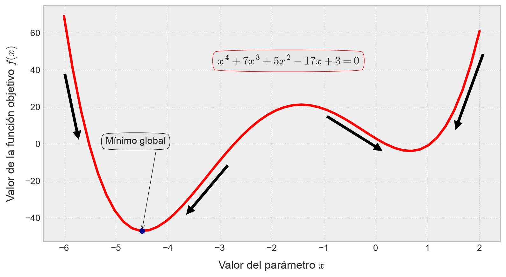
A partir del gráfico anterior, podemos observar que \(f\) tiene un mínimo global en torno al punto \(x_{0}=-4.5\), siendo el valor que toma \(f\) en dicho punto aproximadamente igual a \(-47\). Dado que la gráfica de \(f\) es suave (o, haciendo uso de un término técnico adecuado, regular), podemos utilizar el gradiente de \(f\) para determinar ese mínimo global, lo que nos indicará si debemos avanzar hacia la izquierda o la derecha de \(x_{0}\) en nuestro proceso de búsqueda. Por supuesto, esta lógica asume que estamos en el “valle” correcto, porque existe un valor mínimo local en torno a \(x=0.7\). Los candidatos a valores máximos o mínimos de una función son todos los puntos estacionarios que cumplen con que su gradiente se anule en dichos puntos, llamados puntos críticos. Para la función \(f\), el correspondiente gradiente (que, por ser una función univariante, coincide con su derivada) es
\[ \frac{df\left( x\right) }{dx} =4x^{3}+21x^{2}+10x-17 \tag{6.1} \]
Debido a que (6.1) es una función cúbica, ésta tendrá un máximo de tres raíces reales. En este caso, estos puntos críticos representan dos mínimos y un máximo (en torno a \(x=-1.4\)). Para chequear si un punto crítico es un mínimo o un máximo, necesitamos calcular la segunda derivada de \(f\) y determinar si ésta es positiva o negativa en dicho punto. En nuestro caso, la segunda derivada es
\[ \frac{d^{2}f\left( x\right) }{dx^{2}} =12x^{2}+42x+10 \tag{6.2} \]
Sustituyendo los valores que visualmente hemos estimado como extremos de la función \(f\) (digamos, \(x_{1}=-4.5,x_{2}=-1.4\) y \(x_{3}=0.7\)), observamos que, como cabría esperar, el valor \(x_{2}=-1.4\) es un máximo (ya que el criterio de la segunda derivada para la búsqueda de extremos de una función nos permite llegar a dicha conclusión, porque \(\frac{d^{2}f\left( -1.4\right) }{dx^{2}} <0\)), mientras que \(x_{1}\) y \(x_{3}\) representan valores mínimos.
Notemos que hemos evitado calcular analíticamente los valores de \(x\) para los cuales la derivada \(f'(x)\) es igual a cero, aunque para polinomios de orden bajo (como el de nuestro ejemplo), en general, podríamos hacerlo sin mayor problema. Sin embargo, en general, no es posible encontrar tales soluciones de forma analítica, y por lo tanto necesitamos de algún valor inicial de búsqueda, digamos \(x_{0}=-6\), y movernos en la dirección opuesta de crecimiento del gradiente (es decir, la derivada). Tal dirección nos indica que deberíamos movernos a la derecha del gráfico de \(f\), pero no demasiado lejos del punto inicial (lo que motiva la definición del tamaño del paso). Además, si hubiéramos partido más a la derecha, digamos en \(x_{0}=0\), la dirección del gradiente negativo nos hubiera llevado hacia un mínimo local. El gráfico de \(f\) que construimos previamente ilustra el hecho de que, para \(x>-1\), el gradiente negativo apunta hacia dicho mínimo local, el cual que no es de nuestro interés.
Un poco más adelante, aprenderemos una clase de funciones llamadas funciones convexas, que no exhiben esta dependencia más o menos complicada con respecto a la solución inicial elegida para un algoritmo de optimización. Para el caso de las funciones convexas, todos los mínimos locales son globales. Y sucede además que, en machine learning, muchas funciones objetivo están diseñadas para ser convexas. Veremos ejemplos de ellas más adelante.
Algo importante de notar, es que la discusión previa fue tan solo un adelanto de lo que veremos en esta sección, ya que el problema expuesto en el gráfico que hemos construido para \(f\) involucra a una función de una variable, donde es fácil visualizar cualquier idea referida a gradientes, direcciones de decrecimiento de los mismos y los valores extremos que nos interesan en una función. En el resto de esta sección, extenderemos estas ideas a funciones en \(\mathbb{R}^{n}\), con la salvedad de que será imposible “ver” estos conceptos de forma gráfica para \(n>2\) (es decir, para funciones de más de dos variables). Además, algunos de los conceptos previamente presentados no son trivialmente extensibles a funciones en \(\mathbb{R}^{n}\), por lo que tendremos que seguir ciertas reglas que iremos construyendo paso a paso.
6.2 Motivación geométrica
La situación presentada previamente pone de manifiesto que un problema de optimización corresponde a un desafío que puede resultar significativamente difícil bajo determinadas condiciones. Para poder entender dicha dificultad, será bueno repasar algunos conocimientos que, en general, son presentados en detalle en los cursos de cálculo diferencial. No nos extenderemos demasiado aquí en ellos, pero sí será útil tenerlos en consideración. Ante todo, intentaremos dar ejemplos gráficos de lo que estamos hablando, para lo cual haremos un uso intensivo de la librería Matplotlib, a fin de graficar algunos resultados. También haremos uso de la librería Sympy para desarrollar algo de cálculo simbólico con ayuda de Python, a fin de poder llegar rápidamente a algunos resultados interesantes:
import sympy as sym# Inicializamos el sistema de impresión de resultados simbólicos de Sympy.
sym.init_printing()Durante esta sección introductoria, trabajaremos con campos escalares del tipo \(f:U\subseteq \mathbb{R}^{n} \rightarrow \mathbb{R}\), para \(n\geq 2\), donde \(U\) es un conjunto abierto de \(\mathbb{R}^{n}\). Estamos interesados en resolver, mediante herramientas computacionales, problemas del tipo:
\[ \begin{array}{ll}\displaystyle \min_{\mathbf{x} \in U}&f\left( \mathbf{x} \right)\\ \mathrm{s} .\mathrm{a} .:&g_{i}\left( \mathbf{x} \right) =0\\ &h_{j}\left( \mathbf{x} \right) \leq 0\end{array} \tag{6.3} \]
donde \(1\leq i\leq p\) y \(1\leq j\leq q\). Además:
- \(f:U\subseteq \mathbb{R}^{n} \rightarrow \mathbb{R}\) es una función objetivo que deseamos minimizar sobre el vector \(\mathbf{x}\) de \(n\) variables.
- El conjunto \(g_{i}(\mathbf{x})=0\) es denominado restricciones de igualdad.
- El conjunto \(h_{j}(\mathbf{x})\leq 0\) es denominado restricciones de desigualdad.
- Y por supuesto, \(p,q\geq 0\).
Si \(p=q=0\), el problema (6.3), llamado problema de optimización restringida, se reduce a uno del tipo no restringido. Por convención, la forma estándar anterior define un problema de minimización. Un problema de maximización puede tratarse negando la función objetivo; es decir, escribiendo \(\max(f(\mathbf{x}))=-\min(f(\mathbf{x}))\).
Sea \(f:U\subseteq \mathbb{R}^{n} \rightarrow \mathbb{R}\) una función definida en el conjunto abierto \(U\) de \(\mathbb{R}^{n}\). Diremos que \(f\) tiene un mínimo (o un máximo) local o relativo en el punto \(x_{0}\in U\), si \(f\left( \mathbf{x}_{0} \right) \leq f\left( \mathbf{x} \right)\) (\(f\left( \mathbf{x}_{0} \right) \geq f\left( \mathbf{x} \right)\), respectivamente) para todo \(\mathbf{x}\) en una bola \(\mathcal{B}\) de centro en \(\mathbf{x}_{0}\). Es decir, al igual que en el caso de las funciones de una variable, la función \(f\) tendrá un mínimo local en \(\mathbf{x}_{0}\in U\) si \(f(\mathbf{x}_{0})\) es el valor más pequeño de todos los valores de \(f(\mathbf{x})\) para \(\mathbf{x}\) en una bola \(\mathcal{B}\) de centro en \(\mathbf{x}_{0}\).
Podemos observar un ejemplo sencillo del concepto anterior considerando la función \(f(x,y)=x^{2}+y^{2}\), cuyo gráfico describe una superficie conocida como paraboloide circular. Dicha función tiene un mínimo global (absoluto, que es el valor mínimo de la función en todo su dominio) en el origen. Para comprobarlo, haremos uso las librerías que ya conocemos para graficar esta superficie en el entorno de dicho mínimo global:
# Definimos la función correspondiente.
def f(x, y):
return x**2 + y**2# Creamos un par de arreglos que limitarán la grilla completa de valores donde graficaremos f.
x = np.linspace(start=-5, stop=5, num=100)
y = np.linspace(start=-5, stop=5, num=100)
# Y luego construimos la grilla de interés.
X, Y = np.meshgrid(x, y)
# Finalmente, evaluamos f en esta grilla.
Z = f(X, Y)# Y construimos el gráfico de la superficie.
fig = plt.figure(figsize=(10, 6))
ax = plt.axes(projection='3d')
ax.plot_surface(X, Y, Z, rstride=5, cstride=5, cmap='cool', edgecolor='k')
ax.set_xlabel(r"$x$", fontsize=12, labelpad=10)
ax.set_ylabel(r"$y$", fontsize=12, labelpad=10)
ax.set_zlabel(r"$z$", fontsize=12, labelpad=10)
ax.view_init(60, 60)
plt.tight_layout()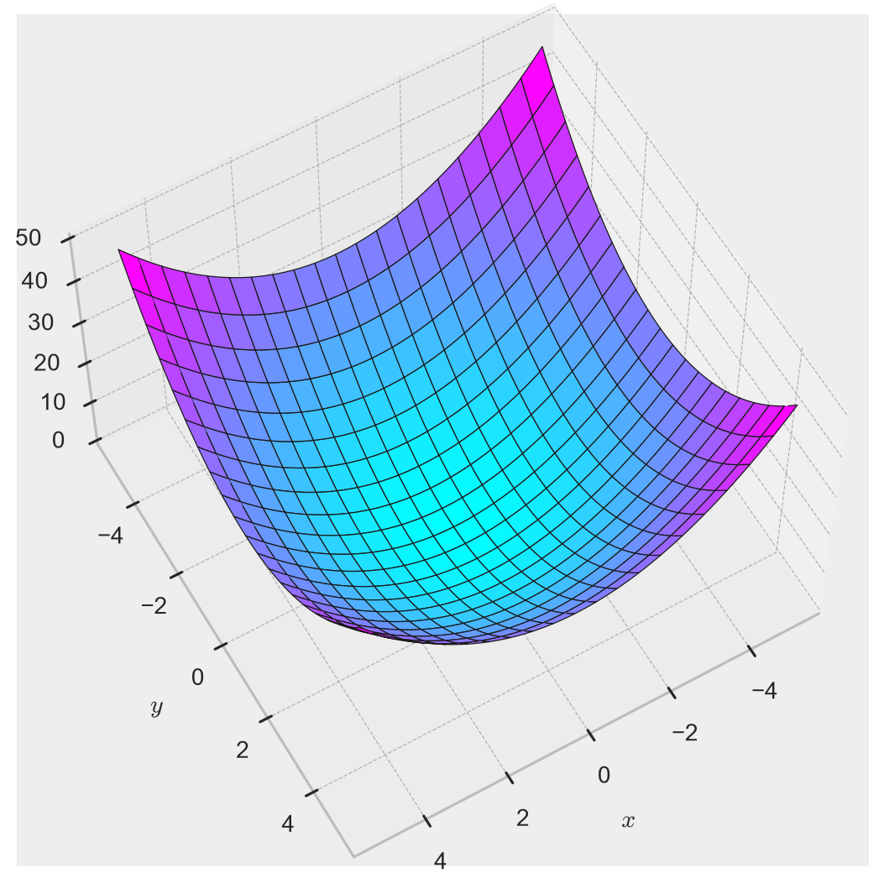
# Y creamos un gráfico de contorno completo para visualizar este mínimo global en 2D.
fig, ax = plt.subplots(figsize=(9, 7))
p = ax.contourf(X, Y, Z, levels=30, cmap='cool')
ax.set_xlabel(r"$x$", fontsize=12, labelpad=10)
ax.set_ylabel(r"$y$", fontsize=12, labelpad=10, rotation=0)
cb = plt.colorbar(p)
cb.set_label("Valor de z", fontsize=12, labelpad=10)
plt.tight_layout()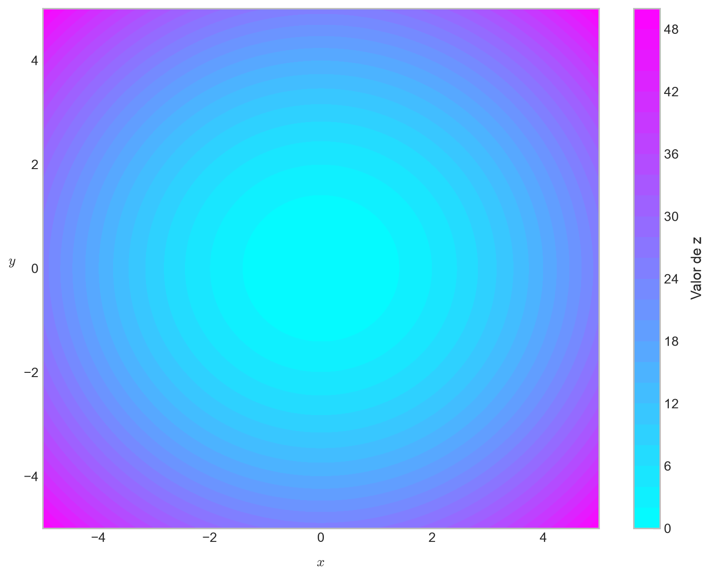
Consideremos la función \(f:U\subseteq \mathbb{R}^{n} \rightarrow \mathbb{R}\) definida en el conjunto abierto \(U\) de \(\mathbb{R}^{n}\). Sea \(\bar{\mathbf{x}}\in U\). Si cualquier bola \(\mathcal{B} \in \mathbb{R}^{n}\) con centro en \(\bar{\mathbf{x}}\) contiene puntos \(\mathbf{x}\in \mathcal{B}\) tales que \(f(\mathbf{x})-f(\bar{\mathbf{x}})>0\) y puntos \(\mathbf{y}\in \mathcal{B}\) tales que \(f(\mathbf{y})-f(\bar{\mathbf{x}})<0\), entonces decimos que \(\mathbf{x}\) es un punto de ensilladura (o punto silla) de la función \(f\). Estos puntos son importantes en la teoría de optimización, debido a que candidatos a ser mínimos (o máximos) locales conforme las mediciones relativas del gradiente local de una función objetivo (por ejemplo, que el gradiente de dicha función se anule en ese punto), pero que no cumplen con criterios que evalúen la curvatura local de la función en el entorno de dicho punto (por ejemplo, que la matriz Hessiana sea definida positiva en dicho punto).
El aspecto de la gráfica de una función \(f:U\subseteq \mathbb{R}^{2} \rightarrow \mathbb{R}\) en el entorno de un punto de ensilladura es, en efecto, similar al de una silla de montar. Un ejemplo clásico de un punto con estas características se puede observar en una superficie denominada paraboloide hiperbólico. Dicha superficie corresponde a la gráfica de la función \(f\left( x,y\right) =\frac{x^{2}}{a^{2}} -\frac{y^{2}}{b^{2}}\), con \(a, b>0\). Podemos graficar dicha función para tener una visualización completa del correspondiente punto de ensilladura:
# Definimos la función correspondiente.
def f(x, y, a, b):
return x**2/a**2 - y**2/b**2# Y la trazamos en la misma grilla de antes.
Z = f(X, Y, a=3, b=2)# Visualizamos su gráfico en el espacio tridimensional.
fig = plt.figure(figsize=(10, 6))
ax = plt.axes(projection='3d')
ax.plot_surface(X, Y, Z, rstride=5, cstride=5, cmap='cool', edgecolor='k')
ax.set_xlabel(r"$x$", fontsize=12, labelpad=10)
ax.set_ylabel(r"$y$", fontsize=12, labelpad=10)
ax.set_zlabel(r"$z$", fontsize=12, labelpad=10)
ax.view_init(60, 60)
plt.tight_layout()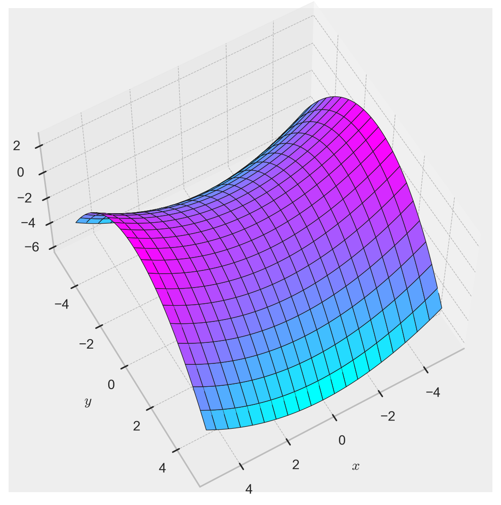
# Y creamos un gráfico de contorno completo para visualizar este punto de ensilladura en 2D.
fig, ax = plt.subplots(figsize=(9, 7))
p = ax.contourf(X, Y, Z, levels=30, cmap='cool')
ax.set_xlabel(r"$x$", fontsize=12, labelpad=10)
ax.set_ylabel(r"$y$", fontsize=12, labelpad=10, rotation=0)
cb = plt.colorbar(p)
cb.set_label("Valor de z", fontsize=12, labelpad=10)
plt.tight_layout()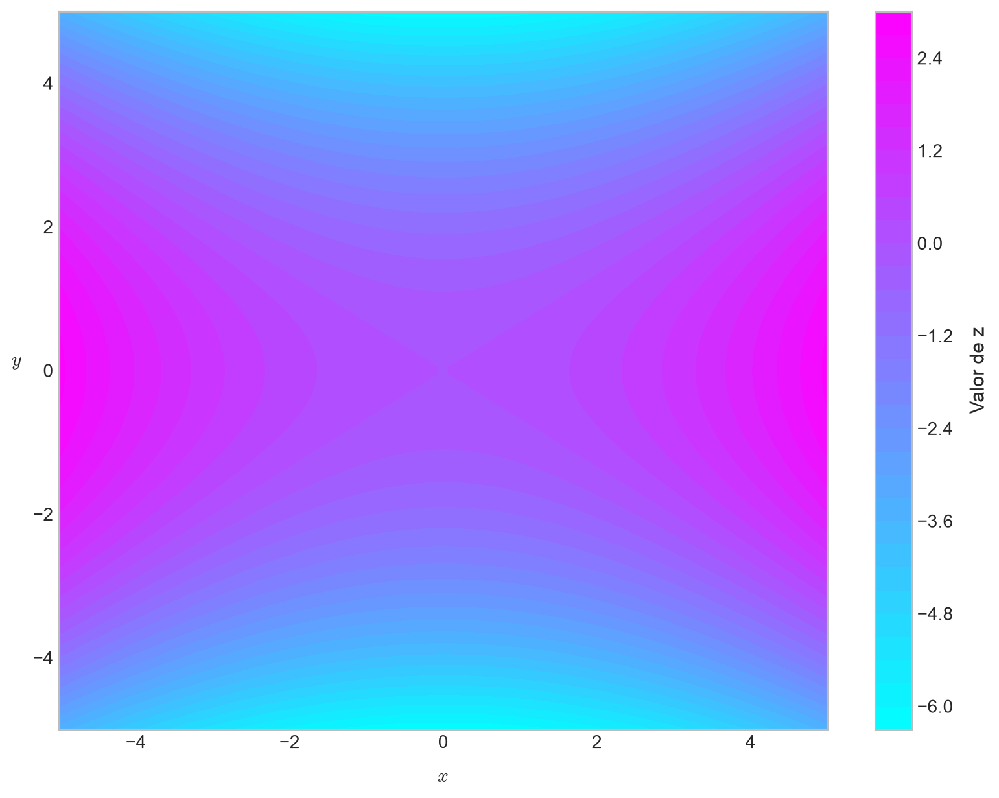
6.3 Valores extremos de funciones
A continuación estableceremos un criterio general que nos permitirá establecer si un punto en el dominio de una función objetivo \(f\) de interés es, en efecto, un mínimo (o máximo) local. Un punto de este tipo suele llamarse extremo local, a fin de ahorrarnos el distinguir el sentido de la optimización. Para estructurar una propuesta general, trabajaremos con funciones escalares definidas sobre espacios de matrices; es decir, aplicaciones del tipo \(f:U\subseteq \mathbb{R}^{m\times n} \longrightarrow \mathbb{R}\), donde \(U\) es un conjunto abierto, denominadas comúnmente campos matriciales. Este marco es más general de lo que parece a primera vista, ya que muchos problemas de optimización en machine learning, estadística y álgebra numérica consisten precisamente en minimizar una función real cuyo argumento es una matriz constituida por parámetros que buscamos “ajustar” para un modelo determinado.
Para estudiar extremos locales de \(f\), equiparemos al conjunto \(\mathbb{R}^{m\times n}\) con una operación binaria denominada producto interno de Frobenius. Si \(U \in \mathbb{R}^{m\times n}\) es un conjunto abierto y consideramos las matrices \(\mathbf{A}\) y \(\mathbf{B}\) de \(U\), definimos este producto interno como
\[ \begin{array}{lll}\left< \mathbf{A} ,\mathbf{B} \right>_{F}&=&\mathrm{tr} (\mathbf{A}^{\top} \mathbf{B} )\\ &=&\displaystyle \sum_{i=1}^{m} \sum_{j=1}^{n} a_{ij}b_{ij}\end{array} \tag{6.4} \]
A partir de dicho producto interno, definimos la norma de Frobenius
\[ \left\Vert \mathbf{A} \right\Vert_{F} =\sqrt{\left< \mathbf{A} ,\mathbf{A} \right>_{F}} \tag{6.5} \]
Esta estructura convierte a \(\mathbb{R}^{m\times n}\) en un espacio Euclídeo de dimensión \(mn\), de modo que toda la teoría local de derivadas, gradientes y curvaturas se extiende de manera completamente análoga al caso vectorial que revisamos en nuestro apunte dedicado al cálculo diferencial. Tiene sentido pues la siguiente definición.
Definición 6.1 – Extremo local: Sea \(f:U\subseteq \mathbb{R}^{m\times n} \longrightarrow \mathbb{R}\) un campo matricial definido en el conjunto abierto \(U\) de \(\mathbb{R}^{m\times n}\). Consideremos un “punto” (matriz, en realidad) \(\mathbf{X}_{0}\in U\). Diremos que \(f\) tiene un mínimo local en \(\mathbf{X}_{0}\), si existe un escalar \(\epsilon >0\) tal que \(f\left( \mathbf{X}_{0} \right) \leq f\left( \mathbf{X} \right)\) para toda \(\mathbf{X}\in U\cap \mathcal{B}_{\epsilon} \left( \mathbf{X}_{0} \right)\), donde
\[ \mathcal{B}_{\epsilon} \left( \mathbf{X}_{0} \right) =\left\{ \mathbf{X} \in \mathbb{R}^{m\times n} :\left\Vert \mathbf{X} -\mathbf{X}_{0} \right\Vert_{F} <\epsilon \right\} \tag{6.6} \]
es la generalización de una bola (centrada en \(\mathbf{X}_{0}\)) con “radio” \(\epsilon\) a un dominio \(U\) de \(\mathbb{R}^{m\times n}\).
Análogamente, \(f\) tiene un máximo local en \(\mathbf{X}_{0}\), si existe un escalar \(\epsilon >0\) tal que \(f\left( \mathbf{X}_{0} \right) \geq f\left( \mathbf{X} \right)\) para toda \(\mathbf{X}\in U\cap \mathcal{B}_{\epsilon} \left( \mathbf{X}_{0} \right)\).
Un elemento adicional para construir nuestro criterio de evaluación de candidatos a extremos en funciones \(f\) definidas sobre dominios matriciales, es necesario contar con una definición formal de derivada para estas funciones. En realidad, el concepto de gradiente que ya introdujimos en nuestro apunte dedicado al cálculo diferencial es suficiente para muchos propósitos prácticos. Sin embargo, conviene establecer primero la noción más general de derivada de Fréchet, pues ella permite recuperar los criterios usuales de derivadas para funciones y campos escalares como Esto motiva la siguiente definición.
Definición 6.2 – Derivada de Fréchet: Sea \(f:U\subseteq \mathbb{R}^{m\times n} \longrightarrow \mathbb{R}\) un campo matricial definido en el conjunto abierto \(U\) de \(\mathbb{R}^{m\times n}\). Sea además \(\mathbf{X}_{0}\in U\). Diremos que \(f\) es diferenciable según Fréchet en \(\mathbf{X}_{0}\) si existe una aplicación lineal \(Df\left( \mathbf{X}_{0} \right) :\mathbb{R}^{m\times n} \longrightarrow \mathbb{R}\), tal que
\[ f\left( \mathbf{X}_{0} +\mathbf{H} \right) =f\left( \mathbf{X}_{0} \right) +Df\left( \mathbf{X}_{0} \right) [\mathbf{H} ]+r\left( \mathbf{H} \right) \tag{6.7} \]
cuando \(\mathbf{H} \rightarrow \mathbf{0}\).
Algunos puntos importantes a aclarar:
- El término \(r\left( \mathbf{H} \right)\) se refiere al error que cometemos al aproximar \(f\left( \mathbf{X}_{0} +\mathbf{H} \right)\) por medio de \(Df\left( \mathbf{X}_{0} \right) [\mathbf{H}]\). Dicho término (expresado en la notación \(o\) pequeña de Landau) es tal que \(r\left( \mathbf{H} \right) =o\left( \left\Vert \mathbf{H} \right\Vert_{F} \right)\) cuando \(\mathbf{H} \rightarrow \mathbf{0}\). O, equivalentemente, \(\lim_{\mathbf{H} \rightarrow \mathbf{0}} \frac{r\left( \mathbf{H} \right)}{\left\Vert \mathbf{H} \right\Vert_{F}} =0\).
- La expresión \(Df\left( \mathbf{X}_{0} \right) [\mathbf{H}]\) es llamada derivada de Fréchet de \(f\), evaluada en \(\mathbf{X}_{0}\), en la dirección de \(\mathbf{H}\).
Puesto que \(\mathbb{R}^{m\times n}\) es un espacio Euclídeo de dimensión finita, es posible demostrar (por medio de un importante teorema del análisis funcional) que existe una única matriz \(\nabla f\left( \mathbf{X}_{0} \right) \in \mathbb{R}^{m\times n}\), tal que
\[ \begin{array}{lll}Df\left( \mathbf{X}_{0} \right) \left[ \mathbf{H} \right]&=&\left< \nabla f\left( \mathbf{X}_{0} \right) ,\mathbf{H} \right>_{F}\\ &=&\mathrm{tr} \left( \nabla f\left( \mathbf{X}_{0} \right)^{\top} \mathbf{H} \right)\end{array} \tag{6.8} \]
para todo \(\mathbf{H} \in \mathbb{R}^{m\times n}\). A la matriz \(\nabla f\left( \mathbf{X}_{0} \right)\) la llamaremos gradiente de \(f\) en \(\mathbf{X}_{0}\).
Si \(f\) es dos veces diferenciable según Fréchet en \(\mathbf{X}_{0}\), entonces su segunda derivada de Fréchet será una forma bilineal simétrica del tipo \(D^{2}f\left( \mathbf{X}_{0} \right) :\mathbb{R}^{m\times n} \times \mathbb{R}^{m\times n} \longrightarrow \mathbb{R}\). De esta manera, el desarrollo de Taylor de segundo orden para \(f\) queda dado por
\[ f\left( \mathbf{X}_{0} +\mathbf{H} \right) =f\left( \mathbf{X}_{0} \right) +Df\left( \mathbf{X}_{0} \right) \left[ \mathbf{H} \right] +\frac{1}{2} D^{2}f\left( \mathbf{X}_{0} \right) \left[ \mathbf{H} ,\mathbf{H} \right] +o\left( \left\Vert \mathbf{H} \right\Vert_{F}^{2} \right) \tag{6.9} \]
La forma cuadrática \(\mathbf{H} \longmapsto D^{2}f\left( \mathbf{X}_{0} \right) \left[ \mathbf{H} ,\mathbf{H} \right]\), en términos geométricos, juega el papel de describir la curvatura local de \(f\) en torno a \(\mathbf{X}_{0}\). Cuando se fija una base de \(\mathbb{R}^{m\times n}\), esta segunda derivada (de Fréchet) puede representarse por medio de una matriz de tamaño \(mn\times mn\), denominada matriz Hessiana de \(f\) en \(\mathbf{X}_{0}\).
6.3.1 Criterio de primer orden para extremos locales
La primera prueba que nos permite evaluar si un punto perteneciente al dominio de un campo matricial \(f\) es un extremo local se denomina criterio de primer orden, porque hace uso de la derivada de Fréchet de \(f\) evaluada en dicho punto. Se trata de una condición necesaria de estacionariedad.
TipTeorema 6.1 – Criterio de primer orden para extremos locales
Sea \(f:U\subseteq \mathbb{R}^{m\times n} \longrightarrow \mathbb{R}\) un campo matricial definido en el conjunto abierto \(U\) de \(\mathbb{R}^{m\times n}\). Si \(\mathbf{X}_{0}\) es un extremo local de \(f\), entonces \(Df\left( \mathbf{X}_{0} \right) =0\). Equivalentemente, \(\nabla f\left( \mathbf{X}_{0} \right) =0\).
Para demostrar el teorema (6.1), consideremos una matriz \(\mathbf{H}\in \mathbb{R}^{m\times n}\) arbitraria y sea la función \(\varphi_{\mathbf{H}} \left( t \right) =f\left( \mathbf{X}_{0} +t\mathbf{H} \right)\), definida para valores de \(t\) lo suficientemente cercanos a cero. Si \(\mathbf{X}_{0}\) es un extremo local de \(f\), entonces \(t=0\) es un extremo local de \(\varphi_{\mathbf{H}}\). Si aplicamos el criterio de la primera derivada para la identificación de “candidatos” a extremos locales en funciones de una variable, debiéramos tener \(\varphi_{\mathbf{H}}^{\prime} \left( 0 \right) =0\). Al aplicar la regla de la cadena, obtenemos
\[ \varphi_{\mathbf{H}}^{\prime} \left( 0 \right) =Df\left( \mathbf{X}_{0} \right) \left[ \mathbf{H} \right] \tag{6.10} \]
La relación (6.10) es válida para todo \(\mathbf{H}\). Por lo tanto, concluimos que \(Df\left( \mathbf{X}_{0} \right)=0\) y, por extensión, \(\nabla f(\mathbf{X}_{0})=0\), tal y como queríamos demostrar.
6.3.2 Criterio de segundo orden para extremos locales
Cuando un punto \(\mathbf{X}_{0}\) satisface el teorema (6.1) para una función \(f:U\subseteq \mathbb{R}^{m\times n} \longrightarrow \mathbb{R}\), decimos que éste es un punto crítico de \(f\) y, por extensión, un “candidato” a extremo local. Sin embargo, el criterio de primer orden es una condición necesaria, pero no suficiente, para garantizar que \(\mathbf{X}_{0}\) sea, en efecto, un valor extremo de \(f\). Dicha suficiencia se logra estudiando la curvatura local del gráfico de \(f\) en el entorno del punto crítico \(\mathbf{X}_{0}\), lo que puede estructurarse conforme el siguiente resultado.
TipTeorema 6.2 – Criterio de segundo orden para extremos locales
Sea \(f:U\subseteq \mathbb{R}^{m\times n} \longrightarrow \mathbb{R}\) una función de clase \(C^{2}\) en un conjunto abierto \(U\) de \(\mathbb{R}^{m\times n}\) (es decir, \(f\) es dos veces diferenciable según Fréchet en \(U\) y las correspondientes derivadas son continuas en \(U\)). Sea \(\mathbf{X}_{0}\in U\) tal que \(\nabla f(\mathbf{X}_{0})=0\). Entonces se verifican las siguientes condiciones:
- Si \(D^{2}f\left( \mathbf{X}_{0} \right) \left[ \mathbf{H} ,\mathbf{H} \right] \geq 0\), para todo \(\mathbf{H}\in \mathbb{R}^{m\times n}\), entonces la segunda derivada \(D^{2}f\left( \mathbf{X}_{0} \right)\) satisface una condición necesaria para que \(\mathbf{X}_{0}\) sea un mínimo local.
- Si \(D^{2}f\left( \mathbf{X}_{0} \right) \left[ \mathbf{H} ,\mathbf{H} \right] \leq 0\), para todo \(\mathbf{H}\in \mathbb{R}^{m\times n}\), entonces la segunda derivada \(D^{2}f\left( \mathbf{X}_{0} \right)\) satisface una condición necesaria para que \(\mathbf{X}_{0}\) sea un máximo local.
- Si \(D^{2}f\left( \mathbf{X}_{0} \right) \left[ \mathbf{H} ,\mathbf{H} \right] > 0\), para todo \(\mathbf{H}\in \mathbb{R}^{m\times n}\), entonces la segunda derivada \(D^{2}f\left( \mathbf{X}_{0} \right)\) satisface una condición suficiente para que \(\mathbf{X}_{0}\) sea un mínimo local estricto.
- Si \(D^{2}f\left( \mathbf{X}_{0} \right) \left[ \mathbf{H} ,\mathbf{H} \right] < 0\), para todo \(\mathbf{H}\in \mathbb{R}^{m\times n}\), entonces la segunda derivada \(D^{2}f\left( \mathbf{X}_{0} \right)\) satisface una condición suficiente para que \(\mathbf{X}_{0}\) sea un máximo local estricto.
- Si existen \(\mathbf{H}_{1}\) y \(\mathbf{H}_{2}\) no nulas, tales que \(D^{2}f\left( \mathbf{X}_{0} \right) \left[ \mathbf{H}_{1} ,\mathbf{H}_{1} \right] >0\) y \(D^{2}f\left( \mathbf{X}_{0} \right) \left[ \mathbf{H}_{2} ,\mathbf{H}_{2} \right] <0\), entonces \(\mathbf{X}_{0}\) no es un extremo local de \(f\).
Notemos que la condición \(\nabla f(\mathbf{X}_{0})=0\) nos informa que no existe cambio lineal de primer orden en ninguna dirección matricial. Por otro lado, la forma cuadrática \(D^{2} f(\mathbf{X}_{0})[\mathbf{H},\mathbf{H}]\) nos permite verificar si, cerca de \(\mathbf{X}_{0}\), el gráfico de \(f\) se “curva” hacia arriba, hacia abajo, o experimenta torsión en direcciones mezcladas. Naturalmente, los extremos locales se verifican en los primeros dos casos, siendo el tercero el caso de un punto de ensilladura.
Ejemplo 6.1 – Los criterios usuales de extremos locales son casos particulares: Una ventaja de formular los criterios de primer y segundo orden para la validación de extremos relativos a partir de puntos críticos para campos matriciales generales, es que, en un dominio matricial, todo puede interpretarse a partir de perturbaciones lineales del tipo \(\mathbf{X}(t) = \mathbf{X}_{0}+ t\mathbf{H}\), siendo \(\mathbf{H}\in \mathbb{R}^{m\times n}\) una matriz arbitraria que simplemente indica una dirección en la cual evaluamos el gradiente de una función objetivo en el punto \(\mathbf{X}_{0}\). Por lo tanto, cada criterio se expresa por medio de las evaluaciones de las derivadas primera y segunda de una función de una variable del tipo \(\varphi_{\mathbf{H}} \left( t \right) =f\left( \mathbf{X}_{0} +t\mathbf{H} \right)\), obteniendo los criterios típicos de evaluación de extremos abordados en cursos de cálculo diferencial como casos particulares de los teoremas (6.1) y (6.2).
En efecto, si \(f\) es un campo escalar definido en un conjunto abierto \(U\) de \(\mathbb{R}^{n}\), basta simplemente con identificar a \(\mathbb{R}^{n}\) como \(\mathbb{R}^{n\times 1}\). En tal caso, las matrices \(\mathbf{X}_{0}\) y \(\mathbf{H}\) y se reducen a vectores \(\mathbf{x}_{0}\) y \(\mathbf{h}\). El producto interno de Frobenius definido en la ecuación (6.4) se reduce al producto interno usual en \(\mathbb{R}^{n}\) y, por consecuencia, el gradiente de \(f\) resulta ser un vector que mide cómo varía linealmente \(f\) en la dirección de \(\mathbf{h}\):
\[ Df\left( \mathbf{x}_{0} \right) \left[ \mathbf{h} \right] =\nabla f\left( \mathbf{x}_{0} \right)^{\top} \mathbf{h} \tag{6.11} \]
Por otro lado, la segunda derivada adopta la forma
\[ D^{2}f\left( \mathbf{x}_{0} \right) \left[ \mathbf{h} ,\mathbf{h} \right] =\mathbf{h}^{\top} \mathbf{H} \left( \mathbf{x}_{0} \right) \mathbf{h} \tag{6.12} \]
donde \(\mathbf{H}(\mathbf{x}_{0})\) es la matriz Hessiana usual de \(f\) evaluada en el punto \(\mathbf{x}_{0}\).
De esta manera:
- Si \(\nabla f(\mathbf{x}_{0})=0\) y \(\mathbf{H}(\mathbf{x}_{0})\) es definida positiva, entonces \(\mathbf{x}_{0}\) es un mínimo local estricto de \(f\).
- Si \(\nabla f(\mathbf{x}_{0})=0\) y \(\mathbf{H}(\mathbf{x}_{0})\) es definida negativa, entonces \(\mathbf{x}_{0}\) es un máximo local estricto de \(f\).
- Si \(\nabla f(\mathbf{x}_{0})=0\) y \(\mathbf{H}(\mathbf{x}_{0})\) es indefinida, entonces \(\mathbf{x}_{0}\) es un punto de ensilladura de \(f\).
Este es precisamente el criterio de evaluación de extremos locales que aprendemos en los cursos de cálculo diferencial para funciones reales de variable vectorial.
Tomando ahora una función \(f\) definida en un intervalo abierto \(I\) de \(\mathbb{R}\), con \(h\) arbitrario lo suficientemente pequeño, las derivadas primera y segunda de Fréchet toman la forma de las derivadas ordinarias aprendidas en cualquier curso de cálculo diferencial, ya que \(Df\left( x_{0} \right) \left[ h \right] =f^{\prime}\left( x_{0} \right) h\) y \(D^{2}f\left( x_{0} \right) \left[ h,h \right] =f^{\prime \prime}\left( x_{0} \right) h^{2}\). De esta manera:
- Si \(f^{\prime}(x_{0})=0\) y \(f^{\prime \prime}(x_{0})>0\), entonces \(x_{0}\) es un mínimo local estricto de \(f\).
- Si \(f^{\prime}(x_{0})=0\) y \(f^{\prime \prime}(x_{0})<0\), entonces \(x_{0}\) es un máximo local estricto de \(f\).
- Si \(f^{\prime}(x_{0})=0\) y \(f^{\prime \prime}(x_{0})=0\), entonces \(x_{0}\) no es posible garantizar que \(x_{0}\) sea o no un extremo local de \(f\).
La evaluación de candidatos a óptimo en todo orden de funciones reales es siempre estructuralmente la misma, independiente de la dimensión del dominio de definición de esas funciones. Primero, anulamos su gradiente a fin de que su razón de cambio local “desaparezca”, y luego inspeccionamos la curvatura local de esa función, la que se encuentra codificada en su segunda derivada. ◼︎
WarningOjo
¿Y existen casos en los cuales el criterio de primer orden (o de la primera derivada) es necesario y suficiente para garantizar que un punto crítico es, en efecto, un extremo de una función objetivo \(f\)? Afortunadamente, sí, aunque sólo para el caso de mínimos globales… ¿El problema? Siempre que \(f\) cumpla con ciertas condiciones muy deseables: Ser convexa y diferenciable en su dominio. La condición de convexidad la definiremos formalmente más adelante, pero es súper estricta. La buena noticia es que la mayoría de las funciones más importantes que debemos optimizar en la práctica del aprendizaje automático (llamadas funciones de pérdida) cumplirán con esta condición.
6.4 Solución de un problema de optimización
Los criterios establecidos previamente permiten una evaluación general de funciones objetivo en un contexto global. Sin embargo, estamos interesados en evaluar problemas de optimización que incluyan ciertos tipos de restricciones. Tales restricciones pueden expresarse en la forma de igualdades y desigualdades definidas en el mismo dominio de la función objetivo, y tienen como misión el acotar ese dominio a fin de que el espacio de soluciones factibles del problema sea reducido y, ojalá, más fácil de examinar.
Matemáticamente, esto puede parecer un sin-sentido, porque sin importar el tamaño del espacio de soluciones factibles de un problema, el número de puntos a evaluar siempre será infinito. Sin embargo, no buscamos una evaluación por fuerza bruta, sino que por eficiencia. En efecto, los criterios estudiados previamente (y algunos métodos que estudiaremos a continuación) permiten formular la solución óptima de un problema de optimización de manera analítica, analizando la información provista por las derivadas de la función objetivo. Desgraciadamente, evaluar esas derivadas muchas veces resultará costoso a nivel computacional, e incluso, podríamos no contar con una fórmula general de cálculo para la propia función objetivo. Es decir, nos podemos ver enfrentados a problemas caracterizados por verdaderas cajas negras. Como no podemos buscar soluciones por medio de fuerza bruta (ya que, por simple inspección, son infinitas), necesitamos acotar el espacio donde “viven” esas soluciones a fin de poder formular una estrategia de búsqueda eficiente. De ahí que los problemas de optimización restringida sean claves en la teoría.
Tienen sentido pues las siguientes definiciones.
Definición 6.3 – Problema de optimización restringida: Sea \(U\subseteq \mathbb{R}^{m\times n}\) un conjunto abierto y sea \(f,g_{i},h_{j}:U\longrightarrow \mathbb{R}\) una familia de funciones escalares definidas sobre el dominio matricial \(U\), tales que \(i=1,...,p\) y \(j=1,...,q\). La expresión
\[ \begin{array}{ll}\displaystyle \min_{\mathbf{X} \in U}&f\left( \mathbf{X} \right)\\ \mathrm{s.a.} :&g_{i}\left( \mathbf{X} \right) =0\ ;\ i=1,...,p\\ &h_{j}\left( \mathbf{X} \right) \leq 0\ ;\ j=1,...,q\end{array} \tag{6.13} \]
será llamada problema de optimización restringida sobre la función objetivo \(f\). Las \(p\) funciones escalares \(g_{1},...,g_{p}\) constituyen las restricciones de igualdad del problema (6.13), mientras que las \(q\) funciones \(h_{1},...,h_{q}\) constituyen las restricciones de desigualdad del problema (6.13). Al problema (6.13) lo llamaremos completo porque incorpora simultáneamente restricciones de igualdad y de desigualdad.
Definición 6.4 – Espacio de soluciones factibles: El conjunto infinito de matrices que satisfacen todas las restricciones del problema (6.13) se denomina espacio de soluciones factibles (ESF), y queda definido por
\[ \mathcal{F} =\left\{ \mathbf{X} \in U\ :\ g_{i}\left( \mathbf{X} \right) =0;\forall i=1,...,p\wedge h_{j}\left( \mathbf{X} \right) \leq 0;\forall j=1,...,q \right\} \tag{6.14} \]
Diremos que \(\mathbf{X}\in U\) es factible para el problema (6.13) si \(\mathbf{X}\in \mathcal{F}\). Notemos que, conforme esta notación, el problema completo (6.13) puede reescribirse de manera compacta como
\[ \min_{\mathbf{X} \in \mathcal{F}} f\left( \mathbf{X} \right) \tag{6.15} \]
Definición 6.5 – Soluciones óptimas global y locales: Una matriz \(\mathbf{X}^{\ast}\in \mathcal{F}\) será llamada solución óptima global del problema (6.15) si \(f\left( \mathbf{X}^{\ast} \right) \leq f\left( \mathbf{X} \right)\) para toda matriz factible \(\mathbf{X}\). Por su parte, una matriz \(\mathbf{X}^{\ast}\) será llamada solución óptima local del problema (6.15) si existe un escalar \(\epsilon >0\), tal que
\[ \begin{gathered}f\left( \mathbf{X}^{\ast} \right) \leq f\left( \mathbf{X} \right) \ ;\ \forall \ \mathbf{X} \in \mathcal{F} \cap \mathcal{B}_{\epsilon} \left( \mathbf{X}^{\ast} \right)\end{gathered} \tag{6.16} \]
donde \(\mathcal{B}_{\epsilon} \left( \mathbf{X}^{\ast} \right)\) denota a una bola abierta de radio \(\epsilon\) centrada en \(\mathbf{X}^{\ast}\), medida con respecto a la norma de Frobenius.
En otras palabras, una solución óptima local no necesariamente minimiza a \(f\) en todo el ESF, sino que en un entorno factible suficientemente pequeño de \(\mathbf{X}^{\ast}\).
El problema completo (6.13) contiene varios casos particulares de interés:
(I) Si \(p=q=0\), entonces no hay restricciones y el problema se reduce a \(\min_{\mathbf{X} \in U} f\left( \mathbf{X} \right)\), denominado problema no restringido. En este caso, los candidatos a solución representados por el punto estacionario \(\mathbf{X}^{\ast}\) se estudian mediante la anulación del gradiente de la función objetivo. Es decir, \(\nabla f(\mathbf{X}^{\ast})=0\).
(II) Si \(p\geq 1\) y \(q=0\), el problema (6.13) se reduce a
\[ \begin{array}{ll}\displaystyle \min_{\mathbf{X} \in U}&f\left( \mathbf{X} \right)\\ \mathrm{s.a.} :&g_{i}\left( \mathbf{X} \right) =0\ ;\ i=1,...,p\end{array} \tag{6.17} \]
y se denomina problema restringido incompleto, en el sentido de que sólo contiene restricciones de igualdad. La herramienta natural para estudiar sus soluciones locales es la teoría de los multiplicadores de Lagrange, que veremos un poco más adelante.
(III) Si \(p\geq 1\) y \(q\geq 1\), el problema (6.13) mantiene su estructura completa. La teoría natural asociada a este caso se fundamenta en las llamadas condiciones de Karush–Kuhn–Tucker (o condiciones KKT), que desarrollaremos brevemente después de presentar formalmente el caso de los multiplicadores de Lagrange.
6.4.1 Método de los multiplicadores de Lagrange
Consideremos el problema incompleto (6.17). Agrupemos las restricciones de igualdad de dicho problema en el campo vectorial \(\mathbf{g} :U\longrightarrow \mathbb{R}^{p}\), definido como
\[ \mathbf{g} \left( \mathbf{X} \right) =\left( g_{1}\left( \mathbf{X} \right) ,...,g_{p}\left( \mathbf{X} \right) \right) \tag{6.18} \]
Definimos entonces el Lagrangiano asociado al problema (6.17) por medio de la expresión
\[ \begin{array}{lll}\mathcal{L} \left( \mathbf{X} ,\mathbf{\lambda} \right)&=&f\left( \mathbf{X} \right) +\mathbf{\lambda}^{\top} \mathbf{g} \left( \mathbf{X} \right)\\ &=&\displaystyle f\left( \mathbf{X} \right) +\sum_{i=1}^{p} \lambda_{i} g_{i}\left( \mathbf{X} \right)\end{array} \tag{6.19} \]
donde \(\mathbf{\lambda} =\left( \lambda_{1} ,...,\lambda_{p} \right) \in \mathbb{R}^{p}\) es un vector cuyas componentes se denominan multiplicadores de Lagrange del problema incompleto (6.17).
La importancia de \(\mathcal{L}\) radica en que permite formular condiciones necesarias de optimalidad para el problema restringido. En efecto, bajo hipótesis de regularidad apropiadas sobre las restricciones, si \(\mathbf{X}^{\ast}\) es una solución óptima local del problema (6.17), entonces existe un vector \(\mathbf{\lambda}^{\ast}\in \mathbb{R}^{p}\) tal que
\[ \nabla_{\mathbf{X}} \mathcal{L} \left( \mathbf{X}^{\ast} ,\mathbf{\lambda}^{\ast} \right) =\mathbf{0} \ \wedge \ \mathbf{g} \left( \mathbf{X}^{\ast} \right) =\mathbf{0} \tag{6.20} \]
Equivalentemente,
\[ \nabla f\left( \mathbf{X}^{\ast} \right) +\sum_{i=1}^{p} \lambda_{i}^{\ast} \nabla g_{i}\left( \mathbf{X}^{\ast} \right) =\mathbf{0} \ \wedge \ g_{i}\left( \mathbf{X}^{\ast} \right) =0\ ;\ i=1,...,p \tag{6.21} \]
Estas ecuaciones constituyen el llamado sistema de Lagrange del problema restringido incompleto (6.17). Sus soluciones proporcionan candidatos a óptimos restringidos, cuya naturaleza debe estudiarse posteriormente mediante condiciones de segundo orden adecuadas.
Ejemplo 6.2: Consideremos el paraboloide circular \(z=x^{2}+y^{2}\). Como sabemos, esta función tiene un mínimo global en \(\mathbf{x}=(0, 0, 0)\). Sin embargo, una posible restricción para este problema es que los puntos \((x,y,z)\) que estén sobre el paraboloide sean tales que \(x+y+z=24\). Esto es, que pertenezcan a la curva resultante de la intersección del paraboloide con el plano \(g(x,y)=24-x-y\). Queremos determinar, en este contexto, los puntos más cercano y alejado del plano \(XY\) que pertenecen a dicha curva.
Es así que hemos definido un problema de optimización restringida, donde la situación geométrica es la siguiente:
# Definimos las correspondientes funciones que caracterizan el problema.
# Función objetivo.
def f(x, y):
return x**2 + y**2
# Restricción.
def g(x, y):
return 24 - x - y# Generamos una grilla para evaluar estas funciones.
x = np.linspace(start=-5, stop=5, num=100)
y = np.linspace(start=-5, stop=5, num=100)
X, Y = np.meshgrid(x, y)
Z = f(X, Y)
g = g(X, Y)# Visualizamos la situación geométrica de este problema en tres dimensiones.
fig = plt.figure(figsize=(9, 6))
ax = plt.axes(projection='3d')
ax.plot_surface(X, Y, Z, rstride=5, cstride=5, color='indianred', edgecolor='k', alpha=0.6)
ax.plot_surface(X, Y, g, rstride=5, cstride=5, color='skyblue', edgecolor='k', alpha=0.6)
ax.set_xlabel(r"$x$", fontsize=12, labelpad=10)
ax.set_ylabel(r"$y$", fontsize=12, labelpad=10)
ax.set_zlabel(r"$z$", fontsize=12, labelpad=10)
ax.view_init(10, -20)
plt.tight_layout()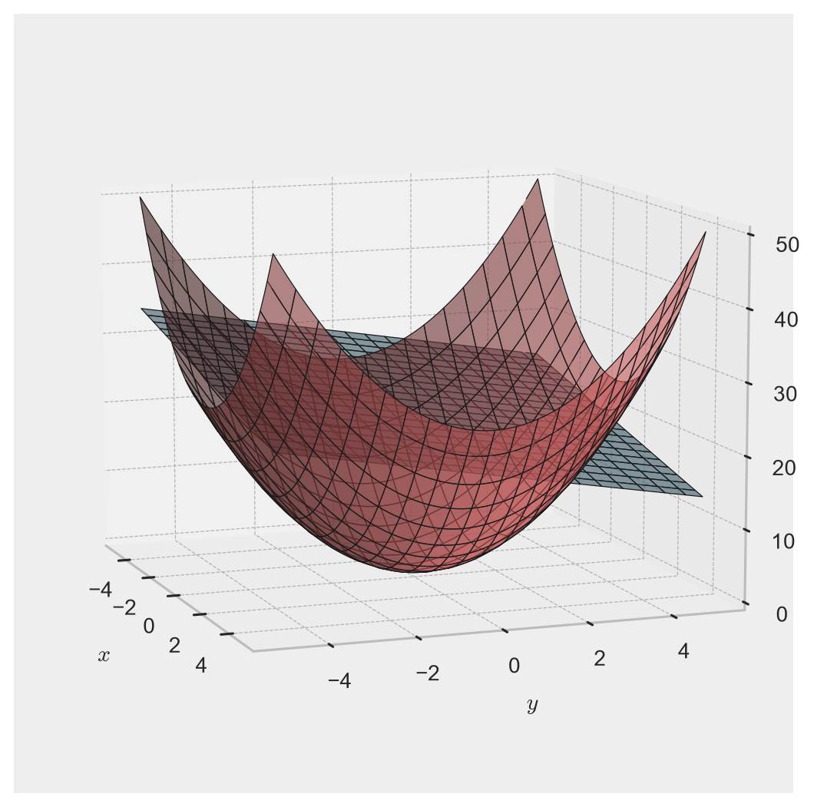
Debido a que la intersección entre ambas superficies ocurre en el semiespacio superior, es evidente que \(z\geq 0\). La función a optimizar es un distancia vertical con respecto al plano \(XY\), por lo que estamos frente a un problema con dos restricciones, que podemos escribir como
\[ \begin{array}{ll}\displaystyle \min_{\left( x,y,z \right) \in \mathbb{R}^{3}}&f\left( x,y,z \right) =z\\ \mathrm{s} .\mathrm{a} .:&z-x^{2}-y^{2}=0\\ &x+y+z-24=0\end{array} \tag{6.22} \]
Consideremos pues las funciones \(g_{1}(x,y,z)=z-x^{2}-y^{2}\) y \(g_{2}(x,y,z)=x+y+z-24\). De este modo, el Lagrangiano de este problema toma la forma
\[ \begin{array}{lll}\mathcal{L} \left( \mathbf{x} ,\lambda_{i} \right) &=&f\left( x,y,z\right) +\displaystyle \sum^{2}_{i=1} \lambda_{i} g_{i}\left( x,y,z\right) \\ &=&z+\lambda_{1} \left( z-x^{2}-y^{2}\right) +\lambda_{2} \left( x+y+z-24\right) \end{array} \tag{6.23} \]
Resolveremos este problema por medio de un procedimiento simbólico en Python por medio de Sympy. Definimos primeramente las variables que constituyen el problema, incluyendo por supuesto los multiplicadores de Lagrange:
# Definimos las variables del problema (por separado las variables reales y los multiplicadores).
x, y, z = sym.symbols("x, y, z", real=True)
lam1, lam2 = sym.symbols(r"\lambda_{1}, \lambda_{2}", real=True)Luego construimos el lagrangiano \(\mathcal{L}\) usando las variables simbólicas anteriores:
# Construimos el lagrangiano.
L = z + lam1*(z - x**2 - y**2) + lam2*(x + y + z - 24)
# Mostramos la expresión resultante en pantalla.
L\(\displaystyle \lambda_{1} \left(- x^{2} - y^{2} + z\right) + \lambda_{2} \left(x + y + z - 24\right) + z\)
Ahora calculamos las derivadas parciales del Lagrangiano con respecto a las variables \((x, y, z)\) y a los multiplicadores \((\lambda_{1}, \lambda_{2})\):
# Derivadas parciales del lagrangiano.
dL_dx = L.diff(x)
dL_dy = L.diff(y)
dL_dz = L.diff(z)
dL_dlam1 = L.diff(lam1)
dL_dlam2 = L.diff(lam2)Igualando estas derivadas a cero llegamos a un sistema no lineal de ecuaciones que podemos resolver rápidamente como sigue:
# Resolvermos el sistema completo.
result = sym.solve([dL_dx, dL_dy, dL_dz, dL_dlam1, dL_dlam2], [x, y, z, lam1, lam2], dict=True)
# Mostramos el resultado en pantalla.
result\(\displaystyle \left[ \left\{ \lambda_{1} : - \frac{1}{7}, \ \lambda_{2} : - \frac{6}{7}, \ x : 3, \ y : 3, \ z : 18\right\}, \ \left\{ \lambda_{1} : \frac{1}{7}, \ \lambda_{2} : - \frac{8}{7}, \ x : -4, \ y : -4, \ z : 32\right\}\right]\)
Por lo tanto, tenemos dos puntos críticos: \(\mathbf{p}_{1}=(3,3,18)\) y \(\mathbf{p}_{2}=(-4,-4,32)\), los que corresponden a los puntos sobre de la curva resultante de la intersección del plano con el paraboloide. Podemos comprobar, por medio del criterio de segundo orden, que estos puntos en efecto corresponden a las distancias mínima y máxima de dicha curva con respecto al plano \(XY\), siendo éstas iguales a \(18\) y \(32\), respectivamente. ◼
Ejemplo 6.3: Consideremos el problema restringido incompleto
\[ \begin{array}{ll} \displaystyle \min_{\left( x,y \right) \in \mathbb{R}^{2}} & f\left( x,y \right) =x+y\\ \mathrm{s.a.} :&x^{2}+y^{2}=1 \end{array} \tag{6.24} \]
Queremos determinar el punto de la circunferencia unitaria en el cual la función lineal \(f(x,y)=x+y\) alcanza su valor mínimo. Geométricamente, este problema puede interpretarse como la búsqueda de los puntos de tangencia entre las rectas de nivel de \(f\) y la curva factible dada por la restricción \(x^{2}+y^{2}=1\).
Es así que hemos definido un problema de optimización restringida, cuya situación geométrica puede visualizarse por medio del plano \(z=x+y\) y de la curva obtenida al restringir dicho plano a la circunferencia unitaria:
# Definición de la función objetivo.
def f(x, y):
return x + y# Grilla para la superficie z = x + y.
x = np.linspace(-1.6, 1.6, 220)
y = np.linspace(-1.6, 1.6, 220)
X, Y = np.meshgrid(x, y)
Z = f(X, Y)
# Restricción: circunferencia unitaria x^2 + y^2 = 1.
t = np.linspace(0, 2*np.pi, 500)
xc = np.cos(t)
yc = np.sin(t)
zc = f(xc, yc)Vamos a mostrar que la solución óptima de este problema corresponde a \(\mathbf{x}^{\mathrm{min}}=\left( -\frac{\sqrt{2}}{2} ,-\frac{\sqrt{2}}{2} \right)\). Al mismo tiempo, también mostraremos que, al invertir el sentido de optimización del problema (6.24), la solución óptima es simplemente la negación de la primera. Es decir, \(\mathbf{x}^{\mathrm{max}}=\left( \frac{\sqrt{2}}{2} ,\frac{\sqrt{2}}{2} \right)\). Los valores extremos de \(f\) serán, consecuentemente, \(f(\mathbf{x}^{\mathrm{min}})= -\sqrt{2}\) y \(f(\mathbf{x}^{\mathrm{max}})=\sqrt{2}\).
La situación geométrica del problema (6.24) es la siguiente:
# Puntos críticos esperados.
x_min = -np.sqrt(2) / 2
y_min = -np.sqrt(2) / 2
z_min = -np.sqrt(2)
x_max = np.sqrt(2) / 2
y_max = np.sqrt(2) / 2
z_max = np.sqrt(2)
# Nivel inferior para proyecciones.
z_offset = Z.min() - 0.8from mpl_toolkits.mplot3d import proj3d# Visualización del problema.
fig = plt.figure(figsize=(9, 7))
ax = fig.add_subplot(111, projection="3d")
# Superficie z = x + y.
surf = ax.plot_surface(
X, Y, Z,
cmap="cool",
edgecolor=None,
alpha=0.5,
antialiased=True
)
# Curva factible sobre la superficie.
ax.plot(
xc, yc, zc,
color="black",
linewidth=2.6,
zorder=10
)
# Proyección de la circunferencia sobre el plano inferior.
ax.plot(
xc, yc, z_offset*np.ones_like(t),
color="black",
linewidth=1.5,
alpha=0.9
)
# Curvas de nivel proyectadas.
ax.contour(
X, Y, Z,
zdir="z",
offset=z_offset,
levels=8,
cmap="cool",
linewidths=0.8
)
# Puntos extremos sobre la curva.
ax.scatter(
[x_min, x_max], [y_min, y_max], [z_min, z_max],
color="black",
marker="x",
s=120,
linewidths=2.2,
zorder=20
)
# Proyección de los puntos extremos sobre el plano inferior.
ax.scatter(
[x_min, x_max], [y_min, y_max], [z_offset, z_offset],
color="black",
marker="x",
s=70,
linewidths=2.0,
zorder=20
)
# Ajustes visuales.
ax.set_xlim(-1.5, 1.5)
ax.set_ylim(-1.5, 1.5)
ax.set_zlim(z_offset, 2.2)
ax.set_xticks(np.arange(-1.5, 1.6, 0.5))
ax.set_yticks(np.arange(-1.5, 1.6, 0.5))
ax.set_zticks(np.arange(-2.0, 2.1, 0.5))
ax.set_xlabel("")
ax.set_ylabel("")
ax.set_zlabel("")
ax.set_xticklabels([])
ax.set_yticklabels([])
ax.set_zticklabels([])
ax.view_init(elev=28, azim=-52)
# Líneas segmentadas y anotaciones dibujadas en 2D, por encima del plano.
fig.canvas.draw()
# Punto mínimo.
x2_min, y2_min, _ = proj3d.proj_transform(x_min, y_min, z_min, ax.get_proj())
ax.annotate(
r"$\left(-\sqrt{2}/2,-\sqrt{2}/2,-\sqrt{2}\right)$",
xy=(x2_min, y2_min),
xytext=(-140, 110),
textcoords="offset points",
xycoords="data",
fontsize=16,
annotation_clip=False,
arrowprops=dict(
arrowstyle="-",
linestyle=(0, (4, 4)),
color="black",
linewidth=1.0
),
)
# Punto máximo.
x2_max, y2_max, _ = proj3d.proj_transform(x_max, y_max, z_max, ax.get_proj())
ax.annotate(
r"$\left(\sqrt{2}/2,\sqrt{2}/2,\sqrt{2}\right)$",
xy=(x2_max, y2_max),
xytext=(-120, 70),
textcoords="offset points",
xycoords="data",
fontsize=16,
annotation_clip=False,
arrowprops=dict(
arrowstyle="-",
linestyle=(0, (4, 4)),
color="black",
linewidth=1.0
),
)
# Barra de color.
cbar = fig.colorbar(surf, ax=ax, shrink=0.72, pad=0.08)
cbar.set_label(r"Valor de $f(x,y)$", fontsize=12, labelpad=10)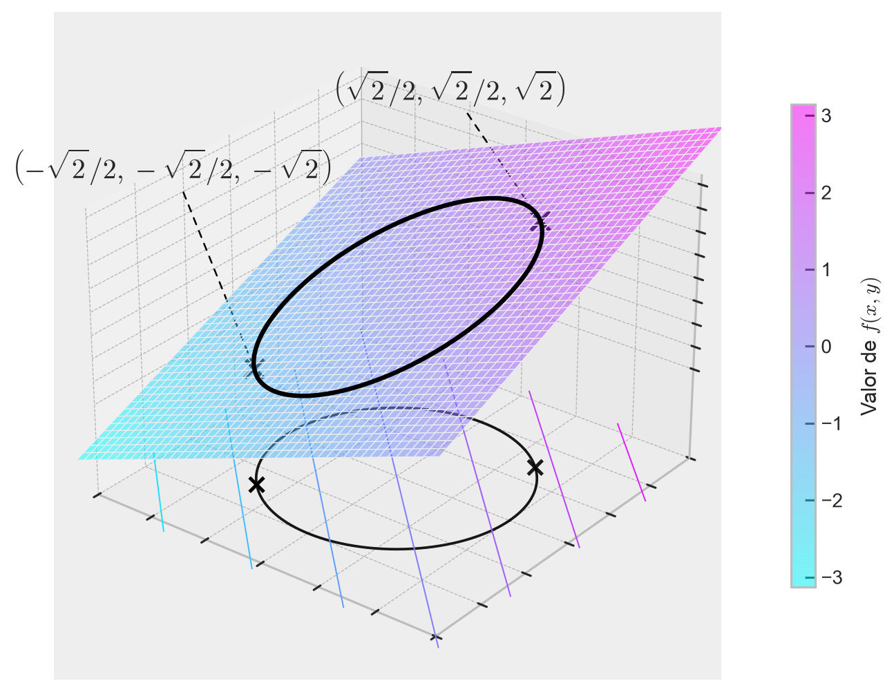
Para resolver el problema (6.24) mediante el método de los multiplicadores de Lagrange, definimos la restricción
\[ g\left( x,y \right) =x^{2}+y^{2}-1 \tag{6.25} \]
Luego, construimos el Lagrangiano asociado, obteniendo
\[ \begin{array}{lll}\mathcal{L} \left( x,y,\lambda \right)&=&f\left( x,y \right) +\lambda g\left( x,y \right)\\ &=&x+y+\lambda \left( x^{2}+y^{2}-1 \right)\end{array} \tag{6.26} \]
De esta manera, las condiciones de primer orden del problema vienen dadas por
\[ \begin{array}{l}\dfrac{\partial \mathcal{L}}{\partial x} =1+2\lambda x=0\\ \dfrac{\partial \mathcal{L}}{\partial y} =1+2\lambda y=0\\ \dfrac{\partial \mathcal{L}}{\partial \lambda} =x^{2}+y^{2}-1=0\end{array} \tag{6.27} \]
Como antes, a fin de ayudarnos con Python a resolver este problema de forma simbólica, haremos uso de la librería Sympy:
# Definimos las variables simbólicas del problema.
x, y = sym.symbols("x, y", real=True)
lam = sym.symbols(r"\lambda", real=True)
# Construimos el Lagrangiano.
L = x + y + lam*(x**2 + y**2 - 1)
# Mostramos el Lagrangiano en pantalla.
L\(\displaystyle \lambda \left(x^{2} + y^{2} - 1\right) + x + y\)
Calculamos ahora las derivadas parciales de \(\mathcal{L}\) con respecto a las variables reales y al multiplicador de Lagrange:
# Derivadas parciales del Lagrangiano.
dL_dx = L.diff(x)
dL_dy = L.diff(y)
dL_dlam = L.diff(lam)
# Mostramos las derivadas en pantalla.
dL_dx, dL_dy, dL_dlam\(\displaystyle \left( 2 \lambda x + 1, \ 2 \lambda y + 1, \ x^{2} + y^{2} - 1\right)\)
Igualando estas expresiones a cero, obtenemos el sistema no lineal que caracteriza a los puntos críticos del problema:
# Resolvemos el sistema de ecuaciones de Lagrange.
result = sym.solve(
[dL_dx, dL_dy, dL_dlam],
[x, y, lam],
dict=True
)
# Mostramos el resultado.
result\(\displaystyle \left[ \left\{ \lambda : - \frac{\sqrt{2}}{2}, \ x : \frac{\sqrt{2}}{2}, \ y : \frac{\sqrt{2}}{2}\right\}, \ \left\{ \lambda : \frac{\sqrt{2}}{2}, \ x : - \frac{\sqrt{2}}{2}, \ y : - \frac{\sqrt{2}}{2}\right\}\right]\)
Para determinar la naturaleza de estos puntos, evaluamos la función objetivo en cada uno de ellos:
# Evaluamos la función objetivo en cada punto crítico.
critical_values = []
for sol in result:
f_val = sym.simplify(sol[x] + sol[y])
critical_values.append((sol[x], sol[y], sol[lam], f_val))
# Mostramos en pantalla estos puntos.
critical_values\(\displaystyle \left[ \left( \frac{\sqrt{2}}{2}, \ \frac{\sqrt{2}}{2}, \ - \frac{\sqrt{2}}{2}, \ \sqrt{2}\right), \ \left( - \frac{\sqrt{2}}{2}, \ - \frac{\sqrt{2}}{2}, \ \frac{\sqrt{2}}{2}, \ - \sqrt{2}\right)\right]\)
De esta manera, obtenemos los puntos críticos
\[ \mathbf{p}_{1} =\left( -\frac{\sqrt{2}}{2} ,-\frac{\sqrt{2}}{2} \right) \wedge \mathbf{p}_{2} =\left( \frac{\sqrt{2}}{2} ,\frac{\sqrt{2}}{2} \right) \tag{6.28} \]
cuyos valores resultantes en la función objetivo son \(f(\mathbf{p}_{1} )=-\sqrt{2} \wedge f(\mathbf{p}_{2} )=\sqrt{2}\). En consecuencia, la solución óptima del problema (6.24) corresponde a la descrita por \(\mathbf{p}_{1}\). El punto \(\mathbf{p}_{2}\) es, por otro lado, es el valor máximo de \(f\) en el mismo espacio de soluciones factibles, y es tal que \(\mathbf{p}_{2}=-\mathbf{p}_{1}\), como esperábamos.
La situación geométrica del problema (6.24) permite verificar visualmente este resultado: Las curvas (en realidad, rectas) de nivel de \(f(x,y)=x+y\) se desplazan paralelamente hasta hacerse tangentes a la circunferencia unitaria en los dos puntos críticos obtenidos. De este modo, el método de los multiplicadores de Lagrange permite identificar los extremos restringidos del problema sin necesidad de parametrizar explícitamente la curva factible, lo que simplifica enormemente la resolución de este problema. ◼︎
Ejemplo 6.4: Consideremos ahora el problema restringido incompleto
\[ \begin{array}{ll} \displaystyle \min_{\left( x,y \right) \in \mathbb{R}^{2}} & f\left( x,y \right) =\left( x+y\right) ^{2}\\ \mathrm{s.a.} :&x^{2}+y^{2}=1 \end{array} \tag{6.29} \]
Este problema es muy similar al del ejemplo anterior. La única diferencia es que ahora la función objetivo ya no es lineal, sino cuadrática. Geométricamente, esto significa que los valores de \(f\) no distinguen entre los niveles \(x+y=c\) y \(x+y=-c\), pues ambos producen el mismo valor al elevarse al cuadrado. En consecuencia, cabe esperar que el problema posea más de un mínimo restringido y más de un máximo restringido sobre la circunferencia unitaria que restringe al espacio de soluciones factibles.
Como antes, nos apoyaremos con Python para mostrar la situación geométrica representada por el problema (6.29), incluyendo sus puntos críticos (que determinaremos un poco más adelante):
# Definición de la función objetivo.
def f(x, y):
return (x + y)**2# Grilla para la superficie z = (x + y)^2.
x = np.linspace(-1.15, 1.15, 260)
y = np.linspace(-1.15, 1.15, 260)
X, Y = np.meshgrid(x, y)
Z = f(X, Y)
# Restricción: circunferencia unitaria.
t = np.linspace(0, 2*np.pi, 600)
xc = np.cos(t)
yc = np.sin(t)
zc = f(xc, yc)
# Puntos críticos sobre la restricción.
p1 = (-np.sqrt(2)/2, -np.sqrt(2)/2, 2.0)
p2 = ( np.sqrt(2)/2, np.sqrt(2)/2, 2.0)
p3 = (-np.sqrt(2)/2, np.sqrt(2)/2, 0.0)
p4 = ( np.sqrt(2)/2, -np.sqrt(2)/2, 0.0)
# Nivel inferior para proyecciones.
z_offset = -0.35# Función auxiliar para generar anotaciones de los puntos críticos.
def annotate_point(ax, point, label, offset):
x2, y2, _ = proj3d.proj_transform(point[0], point[1], point[2], ax.get_proj())
ax.annotate(
label,
xy=(x2, y2),
xytext=offset,
textcoords="offset points",
xycoords="data",
fontsize=16,
annotation_clip=False,
arrowprops=dict(
arrowstyle="-",
linestyle=(0, (4, 4)),
color="black",
linewidth=1.0
),
)# Visualización del problema.
fig = plt.figure(figsize=(9, 7))
ax = fig.add_subplot(111, projection="3d")
# Superficie z = (x + y)^2.
surf = ax.plot_surface(
X, Y, Z,
cmap="cool",
edgecolor=None,
alpha=0.5,
antialiased=True
)
# Curva factible sobre la superficie.
ax.plot(
xc, yc, zc,
color="black",
linewidth=2.6,
zorder=10
)
# Proyección de la circunferencia sobre el plano inferior.
ax.plot(
xc, yc, z_offset*np.ones_like(t),
color="black",
linewidth=1.4,
alpha=0.9
)
# Curvas de nivel proyectadas.
ax.contour(
X, Y, Z,
zdir="z",
offset=z_offset,
levels=10,
cmap="cool",
linewidths=0.8
)
# Puntos críticos sobre la curva.
ax.scatter(
[p1[0], p2[0], p3[0], p4[0]],
[p1[1], p2[1], p3[1], p4[1]],
[p1[2], p2[2], p3[2], p4[2]],
color="black",
marker="x",
s=120,
linewidths=2.2,
zorder=20
)
# Proyección de los puntos críticos sobre el plano inferior.
ax.scatter(
[p1[0], p2[0], p3[0], p4[0]],
[p1[1], p2[1], p3[1], p4[1]],
[z_offset, z_offset, z_offset, z_offset],
color="black",
marker="x",
s=70,
linewidths=2.0,
zorder=20
)
# Ajustes visuales.
ax.set_xlim(-1.1, 1.1)
ax.set_ylim(-1.1, 1.1)
ax.set_zlim(z_offset, 5.6)
ax.set_xlabel("")
ax.set_ylabel("")
ax.set_zlabel("")
ax.set_xticklabels([])
ax.set_yticklabels([])
ax.set_zticklabels([])
ax.view_init(elev=28, azim=-55)
# Anotaciones en 2D para que queden por delante de la superficie.
fig.canvas.draw()
annotate_point(
ax,
p1,
r"$\left(-\sqrt{2}/2,-\sqrt{2}/2,2\right)$",
(-95, 18)
)
annotate_point(
ax,
p2,
r"$\left(\sqrt{2}/2,\sqrt{2}/2,2\right)$",
(-35, 24)
)
annotate_point(
ax,
p3,
r"$\left(-\sqrt{2}/2,\sqrt{2}/2,0\right)$",
(-52, -10)
)
annotate_point(
ax,
p4,
r"$\left(\sqrt{2}/2,-\sqrt{2}/2,0\right)$",
(12, -6)
)
# Barra de color.
cbar = fig.colorbar(surf, ax=ax, shrink=0.72, pad=0.08)
cbar.set_label(r"Valor de $f(x,y)$", fontsize=12, labelpad=10)
plt.tight_layout()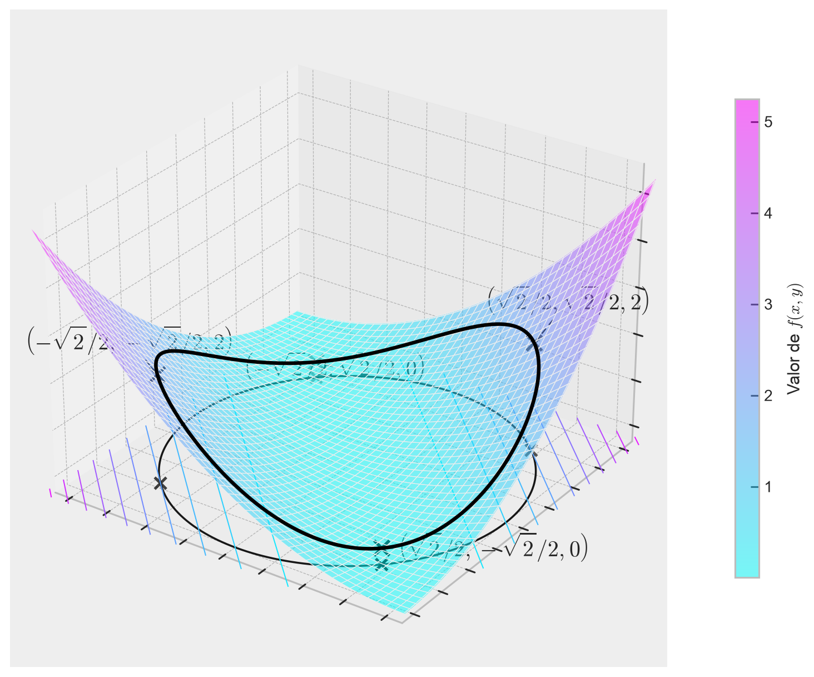
La figura anterior permite apreciar que el problema (6.29) posee dos mínimos restringidos, ambos con valor \(0\), y dos máximos restringidos, ambos con valor \(2\). Ello refleja la simetría de la función objetivo con respecto a la recta \(x+y=0\).
Como antes, usamos Sympy para resolver simbólicamente este problema:
# Definimos las variables simbólicas del problema.
x, y = sym.symbols("x, y", real=True)
lam = sym.symbols(r"\lambda", real=True)
# Construimos el Lagrangiano.
L = (x + y)**2 + lam*(x**2 + y**2 - 1)
# Mostramos el Lagrangiano en pantalla.
L\(\displaystyle \lambda \left(x^{2} + y^{2} - 1\right) + \left(x + y\right)^{2}\)
Calculamos ahora las derivadas parciales de \(\mathcal{L}\) con respecto a las variables reales y al multiplicador de Lagrange:
# Derivadas parciales del Lagrangiano.
dL_dx = L.diff(x)
dL_dy = L.diff(y)
dL_dlam = L.diff(lam)
# Mostramos las derivadas en pantalla.
dL_dx, dL_dy, dL_dlam\(\displaystyle \left( 2 \lambda x + 2 x + 2 y, \ 2 \lambda y + 2 x + 2 y, \ x^{2} + y^{2} - 1\right)\)
Igualando estas expresiones a cero, obtenemos el sistema no lineal que caracteriza a los puntos críticos del problema:
# Resolvemos el sistema de ecuaciones de Lagrange.
result = sym.solve(
[dL_dx, dL_dy, dL_dlam],
[x, y, lam],
dict=True
)
# Mostramos el resultado.
result\(\displaystyle \left[ \left\{ \lambda : -2, \ x : - \frac{\sqrt{2}}{2}, \ y : - \frac{\sqrt{2}}{2}\right\}, \ \left\{ \lambda : -2, \ x : \frac{\sqrt{2}}{2}, \ y : \frac{\sqrt{2}}{2}\right\}, \ \left\{ \lambda : 0, \ x : - \frac{\sqrt{2}}{2}, \ y : \frac{\sqrt{2}}{2}\right\}, \ \left\{ \lambda : 0, \ x : \frac{\sqrt{2}}{2}, \ y : - \frac{\sqrt{2}}{2}\right\}\right]\)
Evaluamos ahora la función objetivo en cada uno de los puntos críticos encontrados:
# Evaluamos la función objetivo en cada punto crítico.
critical_values = []
for sol in result:
f_val = sym.simplify((sol[x] + sol[y])**2)
critical_values.append((sol[x], sol[y], sol[lam], f_val))
critical_values\(\displaystyle \left[ \left( - \frac{\sqrt{2}}{2}, \ - \frac{\sqrt{2}}{2}, \ -2, \ 2\right), \ \left( \frac{\sqrt{2}}{2}, \ \frac{\sqrt{2}}{2}, \ -2, \ 2\right), \ \left( - \frac{\sqrt{2}}{2}, \ \frac{\sqrt{2}}{2}, \ 0, \ 0\right), \ \left( \frac{\sqrt{2}}{2}, \ - \frac{\sqrt{2}}{2}, \ 0, \ 0\right)\right]\)
Obtenemos pues cuatro puntos críticos, que denominamos como \(\mathbf{p}_{1} =\left( \frac{\sqrt{2}}{2} ,\frac{\sqrt{2}}{2} \right)\), \(\mathbf{p}_{2} =\left( -\frac{\sqrt{2}}{2} ,-\frac{\sqrt{2}}{2} \right)\), \(\mathbf{p}_{3} =\left( \frac{\sqrt{2}}{2} ,-\frac{\sqrt{2}}{2} \right)\) y \(\mathbf{p}_{4} =\left( -\frac{\sqrt{2}}{2} ,\frac{\sqrt{2}}{2} \right)\). Al evaluar la función objetivo, obtenemos \(f(\mathbf{p}_{1})=f(\mathbf{p}_{2})=2\) y \(f(\mathbf{p}_{3})=f(\mathbf{p}_{4})=0\). Por lo tanto, el valor mínimo del problema (6.29) es igual a \(0\) y, como esperábamos, ocurre en dos puntos críticos de forma simultánea. Este ejercicio ilustra que, incluso en un problema restringido sencillo, la función objetivo puede presentar múltiples soluciones óptimas cuando su geometría posee ciertas simetrías. ◼︎
Ejemplo 6.5: Consideremos ahora el problema restringido incompleto
\[ \begin{array}{ll}\displaystyle \min_{\left( x,y \right) \in \mathbb{R}^{2}}&f\left( x,y \right) =x^{2}y\\ \mathrm{s.a.} :&x^{2}+y^{2}=3\end{array} \tag{6.30} \]
En este caso, la restricción impone que los puntos factibles residan sobre un círculo centrado en el origen y de radio igual a \(\sqrt{3}\). La función objetivo ya no es lineal ni cuadrática en sentido completo, sino cúbica, por lo que la geometría del problema será un poco más rica que en los ejemplos anteriores.
La situación geométrica del problema (6.30) se muestra a continuación. Mostraremos que los extremos globales de dicho problema ocurren, al igual que en el ejemplo anterior, en cuatro puntos críticos:
# Definición de la función objetivo.
def f(x, y):
return x**2 * y# Grilla para la superficie z = x^2 y.
x = np.linspace(-1.95, 1.95, 280)
y = np.linspace(-1.95, 1.95, 280)
X, Y = np.meshgrid(x, y)
Z = f(X, Y)
# Restricción: círculo de radio sqrt(3).
r = np.sqrt(3)
t = np.linspace(0, 2*np.pi, 700)
xc = r * np.cos(t)
yc = r * np.sin(t)
zc = f(xc, yc)
# Puntos extremo globales sobre la restricción.
p1 = (-np.sqrt(2), 1.0, 2.0)
p2 = ( np.sqrt(2), 1.0, 2.0)
p3 = (-np.sqrt(2), -1.0, -2.0)
p4 = ( np.sqrt(2), -1.0, -2.0)
# Nivel inferior para proyecciones.
z_offset = -3.1# Visualización del problema.
fig = plt.figure(figsize=(9, 7))
ax = fig.add_subplot(111, projection="3d")
# Superficie z = x^2 y.
surf = ax.plot_surface(
X, Y, Z,
cmap="cool",
edgecolor="none",
alpha=0.5,
antialiased=True
)
# Curva factible sobre la superficie.
ax.plot(
xc, yc, zc,
color="black",
linewidth=2.6,
zorder=10
)
# Proyección del círculo sobre el plano inferior.
ax.plot(
xc, yc, z_offset*np.ones_like(t),
color="black",
linewidth=1.4,
alpha=0.9
)
# Curvas de nivel proyectadas.
ax.contour(
X, Y, Z,
zdir="z",
offset=z_offset,
levels=10,
cmap="cool",
linewidths=0.8
)
# Puntos extremo sobre la curva.
ax.scatter(
[p1[0], p2[0], p3[0], p4[0]],
[p1[1], p2[1], p3[1], p4[1]],
[p1[2], p2[2], p3[2], p4[2]],
color="black",
marker="x",
s=120,
linewidths=2.2,
zorder=20
)
# Proyección de los puntos extremo sobre el plano inferior.
ax.scatter(
[p1[0], p2[0], p3[0], p4[0]],
[p1[1], p2[1], p3[1], p4[1]],
[z_offset, z_offset, z_offset, z_offset],
color="black",
marker="x",
s=70,
linewidths=2.0,
zorder=20
)
# Ajustes visuales.
ax.set_xlim(-1.9, 1.9)
ax.set_ylim(-1.9, 1.9)
ax.set_zlim(z_offset, 6.2)
ax.set_xlabel("")
ax.set_ylabel("")
ax.set_zlabel("")
ax.set_xticklabels([])
ax.set_yticklabels([])
ax.set_zticklabels([])
ax.view_init(elev=24, azim=-55)
# Anotaciones en 2D para que queden por delante de la superficie.
fig.canvas.draw()
annotate_point(
ax,
p1,
r"$\left(-\sqrt{2},1,2\right)$",
(-42, 16)
)
annotate_point(
ax,
p2,
r"$\left(\sqrt{2},1,2\right)$",
(-28, 6)
)
annotate_point(
ax,
p3,
r"$\left(-\sqrt{2},-1,-2\right)$",
(-8, 14)
)
annotate_point(
ax,
p4,
r"$\left(\sqrt{2},-1,-2\right)$",
(-105, 18)
)
# Barra de color.
cbar = fig.colorbar(surf, ax=ax, shrink=0.72, pad=0.08)
cbar.set_label(r"Valor de $f(x,y)$", fontsize=12, labelpad=10)
plt.tight_layout()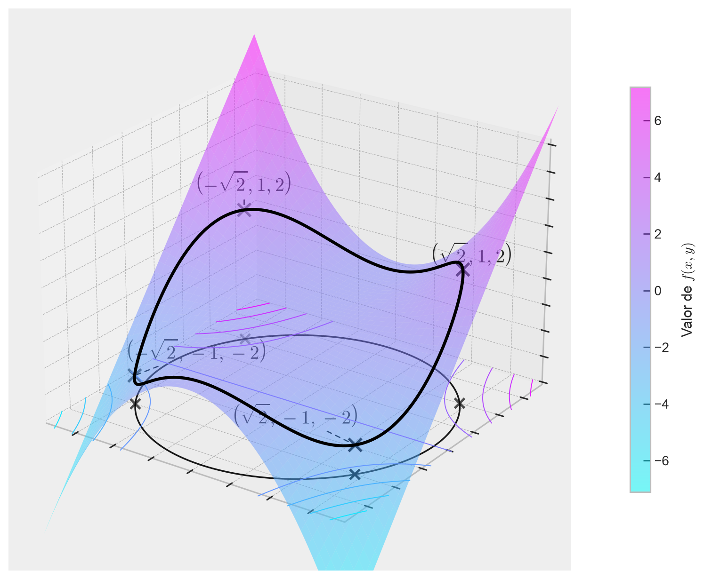
El gráfico anterior permite verificar visualmente que el valor máximo restringido del problema (6.30) es igual a \(2\), y se alcanza en los puntos \((-\sqrt{2},1)\) y \((\sqrt{2},1)\). De manera análoga, el valor mínimo restringido es igual a \(-2\), y se alcanza en los puntos \((-\sqrt{2},-1)\) y \((\sqrt{2},-1)\). Vamos a comprobar estos resultados haciendo uso del método de los multiplicadores de Lagrange usando nuevamente la asistencia técnica de Sympy. En efecto:
# Definimos las variables simbólicas del problema.
x, y = sym.symbols("x, y", real=True)
lam = sym.symbols(r"\lambda", real=True)
# Construimos el Lagrangiano.
L = x**2*y + lam*(x**2 + y**2 - 3)
# Mostramos el Lagrangiano en pantalla.
L\(\displaystyle \lambda \left(x^{2} + y^{2} - 3\right) + x^{2} y\)
Calculamos las derivadas parciales del Lagrangiano \(\mathcal{L}\) con respecto a las variables originales y al multiplicador correspondiente:
# Derivadas parciales del Lagrangiano.
dL_dx = L.diff(x)
dL_dy = L.diff(y)
dL_dlam = L.diff(lam)
# Mostramos las derivadas en pantalla.
dL_dx, dL_dy, dL_dlam\(\displaystyle \left( 2 \lambda x + 2 x y, \ 2 \lambda y + x^{2}, \ x^{2} + y^{2} - 3\right)\)
Igualando estas expresiones a cero, obtenemos el sistema que caracteriza a los puntos críticos del problema:
# Resolvemos el sistema de ecuaciones de Lagrange.
result = sym.solve(
[dL_dx, dL_dy, dL_dlam],
[x, y, lam],
dict=True
)
# Mostramos el resultado en pantalla.
result\(\displaystyle \left[ \left\{ \lambda : -1, \ x : - \sqrt{2}, \ y : 1\right\}, \ \left\{ \lambda : -1, \ x : \sqrt{2}, \ y : 1\right\}, \ \left\{ \lambda : 0, \ x : 0, \ y : - \sqrt{3}\right\}, \ \left\{ \lambda : 0, \ x : 0, \ y : \sqrt{3}\right\}, \ \left\{ \lambda : 1, \ x : - \sqrt{2}, \ y : -1\right\}, \ \left\{ \lambda : 1, \ x : \sqrt{2}, \ y : -1\right\}\right]\)
Y evaluamos finalmente la función objetivo en cada uno de estos puntos críticos:
# Evaluamos la función objetivo en cada punto crítico.
critical_values = []
for sol in result:
f_val = sym.simplify(sol[x]**2 * sol[y])
critical_values.append((sol[x], sol[y], sol[lam], f_val))
critical_values\(\displaystyle \left[ \left( - \sqrt{2}, \ 1, \ -1, \ 2\right), \ \left( \sqrt{2}, \ 1, \ -1, \ 2\right), \ \left( 0, \ - \sqrt{3}, \ 0, \ 0\right), \ \left( 0, \ \sqrt{3}, \ 0, \ 0\right), \ \left( - \sqrt{2}, \ -1, \ 1, \ -2\right), \ \left( \sqrt{2}, \ -1, \ 1, \ -2\right)\right]\)
Vemos pues que este problema tiene un total de seis puntos críticos, dos de los cuales son puntos de ensilladura (\(\mathbf{p}_{1}=(0, \sqrt{3})\) y \(\mathbf{p}_{2}=(0, -\sqrt{3})\)). Esto podemos chequearlo visualmente en el gráfico construido previamente, ya que la curvatura local de \(f\) en el entorno de estos puntos cambia de signo.
Este ejercicio muestra que las ecuaciones de Lagrange proporcionan candidatos a óptimos restringidos, pero que la identificación final de mínimos y máximos requiere evaluar la función objetivo en dichos puntos, o bien complementar el análisis con condiciones de segundo orden. ◼︎
6.4.2 Condiciones de Karush–Kuhn–Tucker
El método de los multiplicadores de Lagrange permite resolver problemas restringidos incompletos; es decir, aquellos que sólo poseen restricciones de igualdad. Sin embargo, en muchas aplicaciones relevantes de optimización y aprendizaje automático, las restricciones del problema incluyen también desigualdades del tipo \(h_{j}\left( \mathbf{X} \right) \leq 0\). En tal caso, el comportamiento local del problema es más sutil, porque no todas las restricciones de desigualdad “actúan” efectivamente en un óptimo local. Algunas de ellas pueden cumplirse con igualdad, mientras que otras pueden quedar estrictamente satisfechas y, por lo tanto, no influir de manera directa en la solución.
Esta observación motiva la teoría subyacente a las condiciones de Karush–Kuhn–Tucker (o condiciones KKT), que extienden el método de Lagrange, previamente introducido, al caso completo de optimización restringida. Para ello, construiremos la siguiente definición.
Definición 6.6 – Restricciones activas e inactivas: Sea \(\mathbf{X}^{\ast}\in \mathcal{F}\) una solución factible del problema completo
\[ \begin{array}{ll} \displaystyle \min_{\mathbf{X} \in U} & f\left( \mathbf{X} \right)\\ \mathrm{s.a.} : & g_{i}\left( \mathbf{X} \right)=0,\qquad i=1,\dots,p\\ & h_{j}\left( \mathbf{X} \right)\leq 0,\qquad j=1,\dots,q \end{array} \tag{6.31} \]
Diremos que la restricción de desigualdad \(h_{j}\left( \mathbf{X} \right)\leq 0\) es activa en \(\mathbf{X}^{\ast}\) si
\[ h_{j}\left( \mathbf{X}^{\ast} \right)=0, \tag{6.32} \]
y diremos que es inactiva en \(\mathbf{X}^{\ast}\) si
\[ h_{j}\left( \mathbf{X}^{\ast} \right)<0. \tag{6.33} \]
El conjunto de índices de todas las restricciones activas en \(\mathbf{X}^{\ast}\) se denomina conjunto activo del problema en dicho punto, y se define por
\[ \mathcal{A}\left( \mathbf{X}^{\ast} \right)=\left\{ j\in \left\{ 1,\dots,q\right\} :h_{j}\left( \mathbf{X}^{\ast} \right)=0\right\} . \tag{6.34} \]
La idea geométrica detrás de esta definición es simple. Cerca de una solución óptima local, sólo las restricciones activas se comportan como verdaderas fronteras del espacio factible. En cambio, las restricciones inactivas no impiden pequeños desplazamientos locales dentro del conjunto factible.
A partir del problema completo (6.31), introducimos el Lagrangiano extendido
\[ \mathcal{L}\left( \mathbf{X} ,\boldsymbol{\lambda} ,\boldsymbol{\mu} \right) =f\left( \mathbf{X} \right) +\sum_{i=1}^{p} \lambda_{i}g_{i}\left( \mathbf{X} \right) +\sum_{j=1}^{q} \mu_{j}h_{j}\left( \mathbf{X} \right), \tag{6.35} \]
donde \(\boldsymbol{\lambda}=\left( \lambda_{1},\dots,\lambda_{p}\right) \in \mathbb{R}^{p}\) es el vector de multiplicadores asociado a las restricciones de igualdad (los cuales se denominan igualmente multiplicadores de Lagrange), y \(\boldsymbol{\mu}=\left( \mu_{1},\dots,\mu_{q}\right) \in \mathbb{R}^{q}\) es el vector de multiplicadores asociado a las restricciones de desigualdad (los que se denominan correspondientemente multiplicadores KKT).
La diferencia fundamental con respecto al caso de Lagrange consiste en que, debido a la naturaleza unilateral de las desigualdades, los multiplicadores \(\mu_{j}\) no pueden tomar valores arbitrarios. En efecto, éstos deben ser no negativos. Esta condición será esencial en nuestro estudio de problemas restringidos generales.
Antes de enunciar formalmente las condiciones KKT, conviene introducir una hipótesis de regularidad local sobre las restricciones del problema (6.31).
Definición 6.7 – Calificación lineal independiente de restricciones (LICQ): Diremos que el problema (6.31) satisface la condición LICQ en un punto factible \(\mathbf{X}^{\ast}\in \mathcal{F}\) si la familia de matrices
\[ \left\{ \nabla g_{1}\left( \mathbf{X}^{\ast} \right) ,\dots,\nabla g_{p}\left( \mathbf{X}^{\ast} \right) \right\} \cup \left\{ \nabla h_{j}\left( \mathbf{X}^{\ast} \right) :j\in \mathcal{A}\left( \mathbf{X}^{\ast} \right) \right\} \tag{6.36} \]
es linealmente independiente en \(\mathbb{R}^{m\times n}\).
Esta condición de regularidad garantiza, en términos geométricos, que las restricciones activas y las restricciones de igualdad no sean redundantes en el entorno del punto factible considerado. Bajo esta hipótesis, las condiciones KKT aparecen como una generalización natural del sistema de Lagrange. Formalizaremos esto por medio del siguiente teorema
TipTeorema 6.3 – Condiciones de Karush–Kuhn–Tucker
Sea \(f,g_{i},h_{j}:U\subseteq \mathbb{R}^{m\times n}\longrightarrow \mathbb{R}\) una familia de funciones de clase \(C^{1}\), y sea \(\mathbf{X}^{\ast}\in \mathcal{F}\) una solución óptima local del problema completo (6.31). Si el problema satisface la condición LICQ en \(\mathbf{X}^{\ast}\), entonces existen vectores \(\boldsymbol{\lambda}^{\ast}\in \mathbb{R}^{p}\) y \(\boldsymbol{\mu}^{\ast}\in \mathbb{R}^{q}\) tales que se verifican simultáneamente las siguientes condiciones:
(Estacionariedad)
\[ \nabla f\left( \mathbf{X}^{\ast} \right) +\sum_{i=1}^{p} \lambda_{i}^{\ast}\nabla g_{i}\left( \mathbf{X}^{\ast} \right) +\sum_{j=1}^{q} \mu_{j}^{\ast}\nabla h_{j}\left( \mathbf{X}^{\ast} \right) =\mathbf{0} \tag{6.37} \]
(Factibilidad primal)
\[ g_{i}\left( \mathbf{X}^{\ast} \right)=0,\qquad i=1,\dots,p \tag{6.38} \]
\[ h_{j}\left( \mathbf{X}^{\ast} \right)\leq 0,\qquad j=1,\dots,q \tag{6.39} \]
(Factibilidad dual)
\[ \mu_{j}^{\ast}\geq 0,\qquad j=1,\dots,q \tag{6.40} \]
(Holgura complementaria)
\[ \mu_{j}^{\ast}h_{j}\left( \mathbf{X}^{\ast} \right)=0,\qquad j=1,\dots,q \tag{6.41} \]
Las relaciones (6.37)–(6.41) constituyen las condiciones KKT del problema (6.31). Toda solución del sistema anterior es un candidato a óptimo local del problema restringido completo.
La interpretación de estas condiciones es más bien intuitiva:
- La condición de estacionariedad indica que, en el óptimo local, el gradiente de la función objetivo debe equilibrarse con los gradientes de las restricciones activas. Dicho de otro modo, en ese punto no existe una dirección factible de descenso de primer orden.
- La factibilidad primal exige simplemente que la solución propuesta pertenezca al espacio de soluciones factibles del problema.
- La factibilidad dual impone que los multiplicadores asociados a las desigualdades sean no negativos. Esta condición es coherente con la convención de escribir las restricciones en la forma \(h_{j}\left( \mathbf{X} \right)\leq 0\) en el problema completo (6.31).
- Finalmente, la holgura complementaria establece que, para cada restricción de desigualdad, ocurre exactamente una de dos cosas: O bien la restricción es activa, en cuyo caso su multiplicador puede ser positivo, o bien la restricción es inactiva, en cuyo caso su multiplicador debe ser igual a cero.
La condición de holgura complementaria merece una lectura particularmente cuidadosa. En efecto, si \(h_{j}\left( \mathbf{X}^{\ast} \right)<0\), entonces la ecuación (6.41) obliga a que \(\mu_{j}^{\ast}=0\). Por lo tanto, toda restricción de desigualdad inactiva “desaparece” del balance de gradientes descrito en la ecuación (6.37). Esto confirma la intuición geométrica inicial: Cerca de un óptimo local, sólo las restricciones activas participan realmente en la determinación de la solución.
Notemos también que, si el problema completo (6.31) no contiene restricciones de desigualdad, entonces \(q=0\), el vector \(\boldsymbol{\mu}\) desaparece y las condiciones KKT se reducen exactamente al sistema de multiplicadores de Lagrange estudiado anteriormente. En este sentido, la teoría KKT constituye una generalización del método de multiplicadores de Lagrange.
Definición 6.8 – Punto KKT: Diremos que una terna \(\left( \mathbf{X}^{\ast} ,\boldsymbol{\lambda}^{\ast} ,\boldsymbol{\mu}^{\ast} \right)\) es un punto KKT del problema completo (6.31) si satisface las ecuaciones (6.37)–(6.41).
Conviene enfatizar que las condiciones KKT son, en general, necesarias, pero no necesariamente suficientes, para garantizar optimalidad local. Es decir, resolver el sistema KKT nos entrega candidatos a óptimo, pero aún puede ser necesario inspeccionar la naturaleza de dichos puntos por medio de condiciones de segundo orden o evaluando directamente la función objetivo sobre las soluciones obtenidas.
WarningOjo
En problemas generales, una solución del sistema KKT puede corresponder a un mínimo local, a un máximo local, a un punto de ensilladura restringido, o incluso a un punto que no optimiza la función objetivo en el sentido deseado. Por ello, las condiciones KKT deben entenderse, en general, como una herramienta para generar candidatos a óptimo, no como una “certificación” automática de optimalidad.
6.4.2.1 Funciones convexas
Antes de proseguir con nuestro estudio de las condiciones KKT, conviene detenernos en una clase de funciones especialmente importantes para la teoría de optimización, denominadas funciones convexas. Ya adelantamos previamente que, para este tipo de funciones, el criterio de primer orden deja de ser simplemente necesario y pasa a desempeñar un papel mucho más fuerte en la determinación de extremos globales. De hecho, en el contexto adecuado, la convexidad permite garantizar que todo mínimo local es automáticamente un mínimo global.
La razón de estudiar propiedad de convexidad en este punto es doble. Por un lado, este concepto permite entender por qué ciertos problemas de optimización son especialmente “amables” desde el punto de vista analítico y computacional. Por otro lado, es justamente en ese contexto donde las condiciones KKT dejan de ser sólo condiciones necesarias y pasan a caracterizar completamente la solución óptima del problema completo (6.31).
Comenzaremos entonces por la definición geométrica básica.
Definición 6.9 – Conjunto convexo: Sea \(U\subseteq \mathbb{R}^{m\times n}\). Diremos que \(U\) es un conjunto convexo si, para todo par de matrices \(\mathbf{X},\mathbf{Y}\in U\) y para todo escalar \(\theta \in [0,1]\), se verifica que
\[ \theta \mathbf{X} + (1-\theta)\mathbf{Y}\in U \tag{6.42} \]
En palabras simples, \(U\) es un conjunto convexo si, cada vez que tomamos dos puntos del conjunto, el segmento recto que los une permanece completamente contenido en él.
Esta definición es puramente geométrica. En términos intuitivos, un conjunto convexo no tiene “entrantes” o “quiebres hacia adentro”. Ejemplos típicos de conjuntos convexos son una bola, un elipsoide, un subespacio afín y un semiespacio. En cambio, una corona circular o la unión de dos discos separados no son convexos.
Sobre un conjunto convexo podemos definir ahora la convexidad de una función objetivo.
Definición 6.10 – Función convexa: Sea \(U\subseteq \mathbb{R}^{m\times n}\) un conjunto convexo y sea \(f:U\to \mathbb{R}\) una función escalar. Diremos que \(f\) es convexa en \(U\) si, para cualesquiera \(\mathbf{X},\mathbf{Y}\in U\) y para todo \(\theta \in [0,1]\), se cumple que
\[ f\left( \theta \mathbf{X} +(1-\theta)\mathbf{Y}\right) \leq \theta f\left( \mathbf{X} \right) +(1-\theta)f\left( \mathbf{Y} \right) \tag{6.43} \]
Si además la desigualdad anterior es estricta para toda pareja \(\mathbf{X}\neq \mathbf{Y}\) y todo \(\theta \in (0,1)\), entonces diremos que \(f\) es estrictamente convexa.
Geométricamente, la desigualdad (6.43) significa que el gráfico de \(f\) queda siempre por debajo del segmento recto que une dos puntos cualesquiera de dicho gráfico. Esta es la idea central de la convexidad.
En una variable real, esta definición se vuelve especialmente transparente. Si \(f:I\subseteq \mathbb{R}\to \mathbb{R}\) es convexa, entonces la curva de \(f\) queda por debajo de toda cuerda que una dos puntos de su gráfico. Si esto no ocurre, la función no es convexa.
Podemos evidenciar visualmente esta diferencia por medio del siguiente ejemplo.
Ejemplo 6.6 – Diferencia visual entre convexidad y no convexidad: Consideremos las funciones
\[ f(x)=x^{2} \qquad \text{y} \qquad g(x)=x^{4}-2x^{2} \tag{6.44} \]
La primera es convexa en todo \(\mathbb{R}\), mientras que la segunda no lo es. El siguiente gráfico muestra, en ambos casos, la cuerda que une dos puntos del gráfico de cada función.
# Funciones de ejemplo.
def f_conv(x):
return x**2
def f_nonconv(x):
return x**4 - 2*x**2# Rango de evaluación.
x = np.linspace(-1.6, 1.6, 500)
# Puntos usados para construir las cuerdas.
a, b = -1.0, 1.0
# Valores de las funciones.
y_conv = f_conv(x)
y_nonconv = f_nonconv(x)
# Cuerda para f_conv.
fa, fb = f_conv(a), f_conv(b)
line_conv = fa + (fb - fa) * (x - a) / (b - a)
# Cuerda para f_nonconv.
ga, gb = f_nonconv(a), f_nonconv(b)
line_nonconv = ga + (gb - ga) * (x - a) / (b - a)# Construimos visualizaciones para estas funciones.
fig, ax = plt.subplots(1, 2, figsize=(9, 4.5))
# Función convexa.
ax[0].plot(x, y_conv, linewidth=2.5, label=r"$f(x)=x^2$")
ax[0].plot(x, line_conv, linestyle="--", linewidth=2.0, label="Cuerda")
ax[0].scatter([a, b], [fa, fb], color="black", zorder=10)
ax[0].set_title("Función convexa", fontsize=13, fontweight="bold", pad=10)
ax[0].set_xlabel(r"$x$", fontsize=12)
ax[0].set_ylabel(r"$f(x)$", fontsize=12)
ax[0].legend(frameon=True)
# Función no convexa.
ax[1].plot(x, y_nonconv, linewidth=2.5, label=r"$g(x)=x^4-2x^2$")
ax[1].plot(x, line_nonconv, linestyle="--", linewidth=2.0, label="Cuerda")
ax[1].scatter([a, b], [ga, gb], color="black", zorder=10)
ax[1].set_title("Función no convexa", fontsize=13, fontweight="bold", pad=10)
ax[1].set_xlabel(r"$x$", fontsize=12)
ax[1].set_ylabel(r"$g(x)$", fontsize=12)
ax[1].legend(frameon=True)
plt.tight_layout()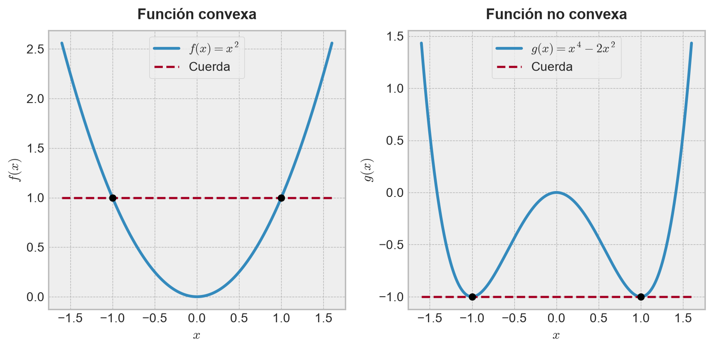
En el panel del lado izquierdo, el gráfico de \(f(x)=x^{2}\) queda por debajo de la cuerda que une dos puntos de su gráfica, tal como exige la definición de convexidad. En cambio, en el panel derecho, el gráfico de \(g(x)=x^{4}-2x^{2}\) “sobrepasa” la cuerda en una zona intermedia, lo que evidencia que la función no es convexa.
La idea anterior también puede visualizarse en dos variables. Consideremos ahora las funciones
\[ f(x,y)=x^{2}+y^{2} \qquad \text{y} \qquad g(x)=x^{2}-y^{2}. \tag{6.45} \]
La primera corresponde a un paraboloide circular y es convexa. La segunda define un paraboloide hiperbólico y no es convexa. Podemos realizar una inspección rápida de sus gráficas para comprobar estos puntos:
# Definimos las funciones del ejemplo.
def f_conv_2d(x, y):
return x**2 + y**2
def f_nonconv_2d(x, y):
return x**2 - y**2# Definimos los dominios de estas funciones.
x = np.linspace(-2.5, 2.5, 120)
y = np.linspace(-2.5, 2.5, 120)
X, Y = np.meshgrid(x, y)
# Y construimos sus recorridos en esos dominios.
Z1 = f_conv_2d(X, Y)
Z2 = f_nonconv_2d(X, Y)# Finalmente, visualizamos ambas gráficas.
fig = plt.figure(figsize=(9, 5))
ax1 = fig.add_subplot(121, projection="3d")
ax1.plot_surface(X, Y, Z1, cmap="cool", edgecolor="none", alpha=0.9)
ax1.set_title(r"Superficie convexa $f(x,y)=x^2+y^2$", fontsize=13, fontweight="bold", pad=10)
ax1.set_xlabel(r"$x$", fontsize=12, labelpad=8)
ax1.set_ylabel(r"$y$", fontsize=12, labelpad=8)
ax1.set_zlabel(r"$z$", fontsize=12, labelpad=8)
ax1.view_init(25, -55)
ax2 = fig.add_subplot(122, projection="3d")
ax2.plot_surface(X, Y, Z2, cmap="cool", edgecolor="none", alpha=0.9)
ax2.set_title(r"Superficie no convexa $g(x,y)=x^2-y^2$", fontsize=13, fontweight="bold", pad=10)
ax2.set_xlabel(r"$x$", fontsize=12, labelpad=8)
ax2.set_ylabel(r"$y$", fontsize=12, labelpad=8)
ax2.set_zlabel(r"$z$", fontsize=12, labelpad=8)
ax2.view_init(25, -55)
plt.tight_layout()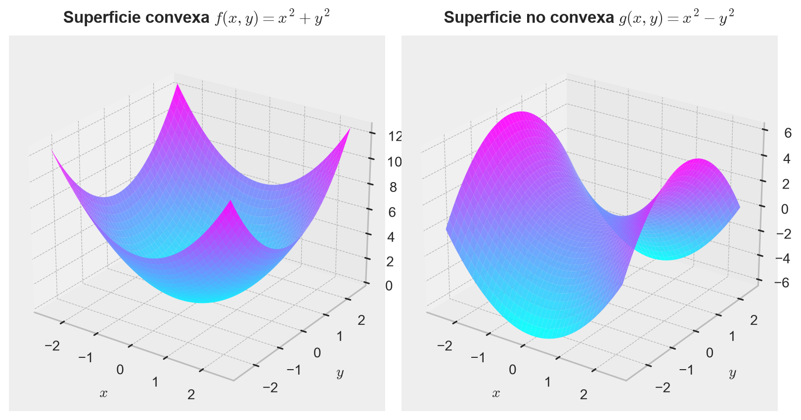
La superficie \(f(x,y)=x^{2}+y^{2}\) posee una única forma de “cuenco”, por lo que cualquier mínimo local es automáticamente global. En cambio, la superficie \(g(x,y)=x^{2}-y^{2}\) tiene un punto de ensilladura en el origen y muestra curvaturas de signo opuesto según la dirección escogida. Esta es precisamente la clase de comportamiento geométrico que hace difícil de resolver aquellos problemas de optimización que no están caracterizados por medio de funciones convexas. ◼︎
La convexidad también puede caracterizarse por medio de derivadas, lo que la conecta directamente con los criterios de primer y segundo orden estudiados anteriormente.
TipTeorema 6.5 – Caracterizaciones diferenciales de convexidad
Sea \(U\in \mathbb{R}^{m\times n}\) un conjunto convexo y sea \(f:U\longrightarrow \mathbb{R}\) una función de clase \(C^{1}\) en \(U\). Entonces \(f\) es convexa en \(U\) si y sólo si, para todo par de matrices arbitrarias \(\mathbf{X},\mathbf{Y} \in U\), se cumple que
\[ f\left( \mathbf{Y} \right) \geq f\left( \mathbf{X} \right) +\left< \nabla f\left( \mathbf{X} \right) ,\mathbf{Y} -\mathbf{X} \right>_{F} \tag{6.46} \]
Si, además, \(f\) es de clase \(C^{2}\) en \(U\), entonces \(f\) es convexa en \(U\) si y sólo si
\[ D^{2}f\left( \mathbf{X} \right) \left[ \mathbf{H} ,\mathbf{H} \right] \geq 0 \tag{6.47} \]
para toda matriz \(\mathbf{X}\in U\) y toda matriz \(\mathbf{H}\in \mathbb{R}^{m\times n}\).
La desigualdad (6.46) es particularmente importante, porque muestra que, para el caso de funciones convexas diferenciables, el plano tangente en cualquier punto del dominio queda siempre por debajo del gráfico completo de la función \(f\). En consecuencia, si en un punto \(\mathbf{X}^{\ast}\) se anula su gradiente, entonces se tendrá que \(f\left( \mathbf{Y} \right) \geq f\left( \mathbf{X}^{\ast} \right)\) para toda \(\mathbf{Y} \in U\), lo que implica que \(\mathbf{X}^{\ast}\) es, de hecho, un mínimo global de \(f\). Esta es la razón por la cual la convexidad es una propiedad tan deseable a la hora de enfrentarnos a un problema de optimización.
También conviene mencionar una propiedad adicional. Si \(f\) es estrictamente convexa, entonces cualquier mínimo global, en caso de existir, es único. De esta manera, la estricta convexidad no sólo garantiza la ausencia de mínimos locales espurios, sino también la unicidad de la solución óptima.
6.4.2.2 Problemas de optimización convexa
A partir de la noción de convexidad para funciones, podemos definir ahora una clase de problemas de optimización particularmente importante.
Definición 6.11 – Problema convexo restringido: Diremos que el problema completo (6.31) es convexo si:
- La función objetivo \(f\) es convexa en \(U\).
- Cada restricción de desigualdad \(h_{j}\) es convexa en \(U\).
- Cada restricción de igualdad \(g_{i}\) es afín en \(U\); es decir, de la forma \(g_{i}\left( \mathbf{X} \right)=\left< \mathbf{A}_{i},\mathbf{X}\right>_{F}+b_{i}\) para alguna matriz \(\mathbf{A}_{i}\) y algún escalar \(b_{i}\).
La exigencia de afinidad en las restricciones de igualdad no es un mero tecnicismo. Ésta garantiza que el conjunto de puntos que satisfacen dichas igualdades siga siendo convexo. Esto es fundamental para que el espacio factible completo del problema herede una geometría convexa.
En problemas convexos, las condiciones de regularidad global juegan un papel central. La más importante de ellas, para nuestros propósitos, es la llamada condición de Slater, que definimos a continuación.
Definición 6.12 – Condición de Slater: Diremos que el problema convexo (6.31) satisface la condición de Slater si existe una matriz \(\bar{\mathbf{X}}\in U\) tal que
\[ g_{i}\left( \bar{\mathbf{X}} \right)=0,\qquad i=1,\dots,p, \tag{6.48} \]
y además
\[ h_{j}\left( \bar{\mathbf{X}} \right)<0,\qquad j=1,\dots,q. \tag{6.49} \]
Es decir, el problema admite al menos un punto factible que satisface estrictamente todas las restricciones de desigualdad.
La condición de Slater es mucho más que una conveniencia técnica. En efecto, ésta asegura que las condiciones KKT no sólo sean necesarias, sino también suficientes para optimalidad global, siempre que el problema sea convexo.
TipTeorema 6.6 – Suficiencia de KKT en optimización convexa
Sea el problema completo (6.31) y admitimos que es de tipo convexo, con \(f\) y las funciones \(h_{j}\) convexas, las funciones \(g_{i}\) afines y, además, supongamos que se satisface la condición de Slater. Entonces, una matriz factible \(\mathbf{X}^{\ast}\in \mathcal{F}\) es solución óptima global del problema si y sólo si existen multiplicadores \(\boldsymbol{\lambda}^{\ast}\in \mathbb{R}^{p}\) y \(\boldsymbol{\mu}^{\ast}\in \mathbb{R}^{q}\) tales que la terna \(\left( \mathbf{X}^{\ast} ,\boldsymbol{\lambda}^{\ast} ,\boldsymbol{\mu}^{\ast} \right)\) satisface las condiciones KKT (6.37)–(6.41).
6.4.3 Problemas primal y dual
La teoría que subyace a las condiciones KKT se conecta de manera natural con otra idea fundamental de la optimización moderna, denominada como dualidad. Todo problema de optimización restringida puede asociarse a un segundo problema, llamado problema dual, cuyo estudio proporciona cotas, garantías de optimalidad y, en muchos casos, una vía alternativa de resolución.
Partamos nuevamente del problema completo
\[ \begin{array}{ll} \displaystyle \min_{\mathbf{X} \in U} & f\left( \mathbf{X} \right)\\ \mathrm{s.a.} : & g_{i}\left( \mathbf{X} \right)=0,\qquad i=1,\dots,p\\ & h_{j}\left( \mathbf{X} \right)\leq 0,\qquad j=1,\dots,q \end{array} \tag{6.50} \]
A este problema lo llamaremos, desde ahora, problema primal. Su valor óptimo se denotará por
\[ p^{\begin{gathered}\ast\end{gathered}}=\inf_{\mathbf{X} \in \mathcal{F}} f\left( \mathbf{X} \right) \tag{6.51} \]
El Lagrangiano extendido asociado a este problema es
\[ \mathcal{L} \left( \mathbf{X} ,\mathbf{\lambda} ,\mathbf{\mu} \right) =f\left( \mathbf{X} \right) +\sum_{i=1}^{p} \lambda_{i} g_{i}\left( \mathbf{X} \right) +\sum_{j=1}^{q} \mu_{j} h_{j}\left( \mathbf{X} \right) \tag{6.52} \]
donde \(\mathbf{\lambda}\in \mathbb{R}^{p}\) y \(\mathbf{\mu}\in \mathbb{R}^{q}\), con \(\mu_{j}\geq 0\).
Definición 6.13 – Función dual: La función dual asociada al problema primal (6.52) es la aplicación
\[ q\left( \mathbf{\lambda} ,\mathbf{\mu} \right) =\inf_{\mathbf{X} \in U} \mathcal{L} \left( \mathbf{X} ,\mathbf{\lambda} ,\mathbf{\mu} \right) \tag{6.53} \]
y que está definida para \(\mathbf{\lambda}\in \mathbb{R}^{p}\) y \(\mathbf{\mu}\in \mathbb{R}^{q}\), con \(\mu_{j}\geq 0\). Notemos que, para cada elección fija de multiplicadores, \(q\left( \mathbf{\lambda} ,\mathbf{\mu} \right)\) representa el mejor valor inferior que puede obtenerse del Lagrangiano al minimizar con respecto a la variable primal \(\mathbf{X}\). En general, este valor puede ser finito o, incluso, diverger a \(-\infty\).
Un hecho muy importante (y, de hecho, sorprendente en primera instancia) es que la función dual \(q\left( \mathbf{\lambda} ,\mathbf{\mu} \right)\) siempre es cóncava en el espacio \(\left( \mathbf{\lambda} ,\mathbf{\mu} \right)\), incluso aunque el problema primal no sea convexo. El concepto de función “cóncava” es opuesto al de función convexa. Es decir, se cumple que \(g\left( \alpha \mathbf{\lambda} +(1-\alpha )\mathbf{\mu} \right) \geq \alpha g\left( \mathbf{\lambda} \right) +(1-\alpha )g\left( \mathbf{\mu} \right)\), para todo par \(\left( \mathbf{\lambda} ,\mathbf{\mu} \right)\) y todo escalar \(\alpha in [0, 1]\).
A partir de la función dual \(q\), derivamos la siguiente definición.
Definición 6.14 – Problema dual: El problema dual asociado al problema primal (6.50) corresponde a
\[ \begin{array}{ll}\displaystyle \max_{\mathbf{\lambda} ,\mathbf{\mu}}&q\left( \mathbf{\lambda} ,\mathbf{\mu} \right)\\ \mathrm{s.a.} :&\mathbf{\mu} \geq \mathbf{0}\end{array} \tag{6.54} \]
Denotaremos por
\[ d^{\ast}=\sup_{\mathbf{\lambda} \in \mathbb{R}^{p} ,\mathbf{\mu} \geq \mathbf{0}} q\left( \mathbf{\lambda} ,\mathbf{\mu} \right) \tag{6.55} \]
a la solución óptima del problema dual.
Se tiene pues que el problema dual se define a partir del primal se manera directa. Consta de un total de \(p+q\) variables duales, una por cada restricción, y que se corresponden con los multiplicadores de Lagrange y KKT del problema primal. Su función objetivo es, naturalmente, la función dual definida previamente, que es siempre cóncava (lo que implica la existencia de un máximo global para dicha función). Por lo tanto, se trata de un problema con sentido de optimización inverso al primal.
Un resultado importante derivado de la existencia del problema dual es el siguiente.
TipTeorema 6.7 – Dualidad débil
Sea \(\mathbf{X}\in \mathcal{F}\) un punto factible del problema primal (6.50), y sea \((\mathbf{\lambda} ,\mathbf{\mu})\) un punto factible del problema dual (6.54), con \(\mathbf{\mu} \geq \mathbf{0}\). Entonces se verifica que
\[ q\left( \mathbf{\lambda} ,\mathbf{\mu} \right) \leq f\left( \mathbf{X} \right) \tag{6.56} \]
En particular, para las correspondientes soluciones óptimas de ambos problemas, se tiene que \(d^{\ast}\leq p^{\ast}\)
La demostración de este resultado es inmediata. En efecto, si \(\mathbf{X}\) es una solución factible del problema primal (6.50), entonces \(g_{i}(\mathbf{X})=0\) y \(h_{j}(\mathbf{X}) \leq 0\) para cada \(i=1,...,p\) y \(j=1,...,q\). Como, además, \(\mu_{j} \geq 0\), se tiene que
\[ \sum_{j=1}^{q} \mu_{j} h_{j}\left( \mathbf{X} \right) \leq 0 \tag{6.57} \]
Por lo tanto, \(\mathcal{L} \left( \mathbf{X} ,\mathbf{\lambda} ,\mathbf{\mu} \right) \leq f\left( \mathbf{X} \right)\), y como \(q(\mathbf{\lambda} ,\mathbf{\mu})\) es el ínfimo de \(\mathcal{L} \left( \mathbf{X} ,\mathbf{\lambda} ,\mathbf{\mu} \right) \leq f\left( \mathbf{X} \right)\) respecto de \(\mathbf{X}\), concluimos que \(q\left( \mathbf{\lambda} ,\mathbf{\mu} \right) \leq \mathcal{L} \left( \mathbf{X} ,\mathbf{\lambda} ,\mathbf{\mu} \right) \leq f\left( \mathbf{X} \right)\).
La desigualdad \(d^{\ast} \leq p^{\ast}\) expresa exactamente que el problema dual siempre entrega una cota inferior de la solución óptima del problema primal. Esta propiedad es extremadamente valiosa, incluso cuando no existe igualdad entre ambos problemas, porque permite “certificar” cuán buena es una solución primal dada.
La diferencia \(p^{\ast}-d^{\ast} \geq 0\) se denomina brecha de dualidad (o dual gap) del problema (6.50). Naturalmente, estamos interesados en verificar si existen problemas de optimización sin brecha de dualidad. O, en palabras simples, que sean tales que su solución óptima dual coincida con la solución óptima primal. Esto motiva la siguiente definición.
Definición 6.15 – Dualidad fuerte: Diremos que el problema primal (6.50) y su dual (6.54) satisfacen la condición de dualidad fuerte si \(p^{\ast}=d^{\ast}\). En caso contrario, diremos que su correspondiente brecha de dualidad es estrictamente positiva.
La dualidad fuerte es deseable por varias razones. En primer lugar, porque permite resolver indirectamente un problema primal a través de su dual, que con suerte podría resultar más sencillo. En segundo lugar, porque proporciona garantías exactos de optimalidad: Si encontramos una solución primal factible y una solución dual factible con el mismo valor objetivo, entonces ambas son automáticamente óptimas. En tercer lugar, porque conecta de manera muy natural con las condiciones KKT presentadas con anterioridad.
En problemas convexos, la dualidad fuerte no es excepcional, sino la regla, bajo hipótesis de regularidad adecuadas. Para ello, nos apoyaremos del siguiente teorema.
TipTeorema 6.8 – Dualidad fuerte en problemas convexos
Sea el problema primal (6.50) un problema convexo. Si además se satisface la condición de Slater, entonces se verifica dualidad fuerte; es decir, si \(p^{\ast}\) es la solución óptima primal y \(d^{\ast}\) es la solución óptima dual, entonces \(p^{\ast}=d^{\ast}\). Además, existe una solución dual óptima \((\mathbf{\lambda}^{\ast}, \mathbf{\mu}^{\ast})\), y las condiciones KKT resultan necesarias y suficientes para garantizar la optimalidad global del problema.
El teorema (6.8) resume la razón profunda por la que los problemas convexos son tan atractivos. En ellos, la geometría del problema, la teoría subyacente a las condiciones KKT y la teoría de dualidad encajan perfectamente. No sólo desaparecen los mínimos locales espurios, sino que además el problema dual entrega exactamente el mismo valor óptimo que el primal. En consecuencia, la brecha de dualidad se anula y la optimalidad puede garantizarse de manera rigurosa.
Dicho de manera práctica, los problemas convexos son deseables porque reúnen simultáneamente las siguientes propiedades:
- Todo mínimo local es global.
- Si la función objetivo es estrictamente convexa, la solución óptima es única.
- Las condiciones KKT son necesarias y suficientes bajo hipótesis razonables.
- La dualidad fuerte suele cumplirse bajo una condición de regularidad verificable, como la de Slater.
- El problema dual proporciona cotas inferiores exactas y, en muchos casos, una vía computacional más eficiente de resolución.
La conexión entre dualidad y condiciones KKT puede expresarse de forma particularmente elegante como sigue: En presencia de convexidad y dualidad fuerte, resolver el problema primal, resolver el problema dual y resolver el sistema derivado de las condiciones KKT son, en esencia, tres formas distintas de describir una misma solución óptima.
Con esto, la teoría desarrollada hasta aquí puede resumirse de la siguiente manera. El método de Lagrange explica cómo buscar óptimos restringidos cuando sólo hay igualdades. Las condiciones KKT extienden esa lógica al caso de desigualdades. La convexidad garantiza que estos candidatos son realmente óptimos globales. Finalmente, la dualidad muestra que toda esta estructura puede reinterpretarse en términos de un segundo problema asociado, cuyas soluciones permiten acotar, caracterizar y, en muchos casos, calcular exactamente la solución del problema original.
Ejemplo 6.7 – Visualización de un espacio factible para un problema restringido completo: Consideremos el siguiente problema de optimización restringida:
\[ \begin{array}{ll} \displaystyle \min_{(x,y,z)\in \mathbb{R}^{3}} & f(x,y,z)=z\\ \mathrm{s.a.} : & x^{2}+y^{2}-1=0\\ & z-x-y=0\\ & -z\leq 0\\ & -x\leq 0 \end{array} \tag{6.58} \]
No nos interesa resolver este problema por ahora. Lo que queremos es visualizar su espacio factible.
Las dos primeras restricciones son de igualdad. La ecuación \(x^{2}+y^{2}=1\) describe un cilindro circular unitario, mientras que la ecuación \(z=x+y\) describe un plano oblicuo. La intersección entre ambas superficies genera una curva cerrada en el espacio. Por otro lado, las restricciones de desigualdad
\[ z\geq 0 \qquad \text{y} \qquad x\geq 0 \tag{6.59} \]
recortan dicha curva, dejando sólo una porción de ella como conjunto factible. En consecuencia, el espacio factible del problema (6.58) es un arco de la curva de intersección entre el cilindro y el plano.
La siguiente visualización en Python muestra esta situación geométrica en tres dimensiones y, además, su proyección sobre el plano \(XY\).
# Primero, definimos las superficies que describen el ESF.
# Cilindro x^2 + y^2 = 1.
theta = np.linspace(0, 2*np.pi, 200)
z_vals = np.linspace(-1.5, 1.5, 80)
Theta, Zc = np.meshgrid(theta, z_vals)
Xc = np.cos(Theta)
Yc = np.sin(Theta)
# Plano z = x + y.
xp = np.linspace(-1.2, 1.2, 120)
yp = np.linspace(-1.2, 1.2, 120)
Xp, Yp = np.meshgrid(xp, yp)
Zp = Xp + Yp# Ahora construimos la curva de intersección y su tramo factible.
t = np.linspace(0, 2*np.pi, 600)
x_curve = np.cos(t)
y_curve = np.sin(t)
z_curve = x_curve + y_curve
# Restricciones de desigualdad.
# z >= 0 <=> x + y >= 0
# x >= 0
mask = (z_curve >= 0) & (x_curve >= 0)
x_feas = x_curve[mask]
y_feas = y_curve[mask]
z_feas = z_curve[mask]
# Definimos el nivel inferior para proyectar la curva factible
z_offset = -1.6# Construimos nuestra visualización.
fig = plt.figure(figsize=(10, 7))
ax = fig.add_subplot(111, projection="3d")
# Cilindro.
ax.plot_surface(
Xc, Yc, Zc,
cmap="cool",
alpha=0.18,
edgecolor="none"
)
# Plano
ax.plot_surface(
Xp, Yp, Zp,
cmap="cool",
alpha=0.38,
edgecolor="none"
)
# Curva completa de intersección.
ax.plot(
x_curve, y_curve, z_curve,
color="gray",
linestyle="--",
linewidth=1.6,
alpha=0.8
)
# Tramo factible destacado.
ax.plot(
x_feas, y_feas, z_feas,
color="black",
linewidth=3.0
)
# Proyección del tramo factible sobre un plano inferior.
ax.plot(
x_feas, y_feas, z_offset*np.ones_like(x_feas),
color="black",
linewidth=2.0
)
# Ajustes visuales.
ax.set_xlim(-1.2, 1.2)
ax.set_ylim(-1.2, 1.2)
ax.set_zlim(z_offset, 1.8)
ax.set_xlabel(r"$x$", fontsize=12, labelpad=10)
ax.set_ylabel(r"$y$", fontsize=12, labelpad=10)
ax.set_zlabel(r"$z$", fontsize=12, labelpad=10)
ax.view_init(elev=25, azim=-55)
plt.tight_layout()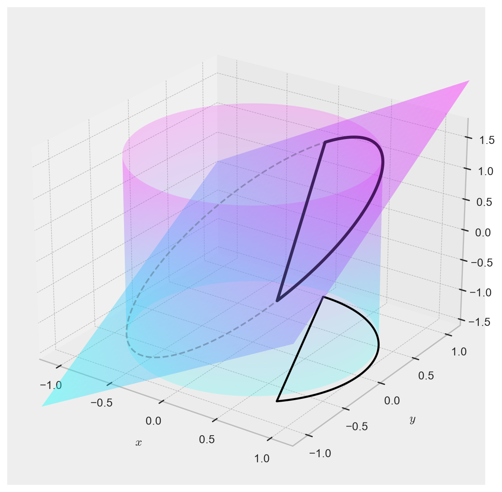
6.5 Solución numérica por medio de scipy.optimize
Un aspecto esencial del estudio de los problemas de optimización, como hemos visto previamente, es la dificultad que existe para determinar una solución óptima en un caso general (ya sabemos, restringido y completo). Si bien existen elementos estructurales que permiten “certificar” la optimalidad de una solución factible, como los multiplicadores de Lagrange o las condiciones KKT, la verdad es que será usual recurrir a métodos numéricos para resolver estos problemas. Tales métodos son variados y será necesario elegir el mejor dependiendo de la cantidad de información con la que contemos en determinado momento. Algunos de estos métodos requerirán mucha información, incluyendo gradientes e incluso matrices Hessianas explícitamente definidas para las corresapondientes funciones objetivo. Otros prescindirán incluso de la definición de las correspondientes funciones objetivo, asumiendo que éstas son verdaderas cajas negras (lo que se conoce como optimización de tipo black-box). Sea cual sea el caso, será necesario equiparnos con herramientas computacionales capaces de trabajar eficientemente en la solución de estos problemas, evitando caer en “trampas” típicas, como la existencia de extremos locales.
En este primer abordaje numérico de los problemas de optimización, nos abocaremos a describir como la librería Scipy de Python nos provee de diversas herramientas para lograrlo. Tales herramientas se encuentran disponibles en el módulo scipy.optimize. En una primera aproximación, focalizaremos nuestra atención primero en problemas no restringidos, debido a que éstos suelen ser más sencillos de resolver. Sin embargo, como veremos más adelante, nuestro objetivo es poder resolver cualquier tipo de problema.
El campo de la optimización es fascinante y, por extensión, es objeto del desarrollo de muchos estudios y nuevos métodos que permiten resolver problemas de alta complejidad. Tales métodos suelen testearse sobre problemas bien conocidos en la teoría a modo de benchmark. En el caso de los problemas no restringidos, una función objetivo típica que usamos para probar métodos numéricos de optimización es la llamada función de Rosenbrock, definida explícitamente como
\[ f\left( x,y \right) =\left( a-x \right)^{2} +b\left( y-x^{2} \right)^{2} \tag{6.60} \]
Esta función no es convexa. Sin embargo, presenta un mínimo global en el punto \((x,y)=(a,a^{2})\) igual a \((0,0)\). Usualmente, los parámetros \(a\) y \(b\) se setean \(a=1\) y \(b=100\).
La función de Rosenbrock puede generalizarase para todo vector \(\mathbf{x}\in \mathbb{R}^{n}\) escribiendo
\[ f\left( \mathbf{x} \right) =\sum_{i=1}^{n-1} 100\left( x_{i+1}-x_{i}^{2} \right)^{2} +\left( 1-x_{i} \right)^{2} \tag{6.61} \]
donde hemos imputado de manera directa los parámetros \(a=1\) y \(b=100\).
La función de Rosenbrock así definida es de clase \(C^{\infty}\) en todo \(\mathbb{R}^{n}\), y es típicamente utilizada para evaluar la precisión y rendimiento de muchos algoritmos de optimización numérica en términos computacionales. Su valor mínimo es \(\mathbf{x}=\mathbf{0}\), y se obtiene en \(x_{i}=1\) para todo \(i=1,...,n\). Esta función es tan utilizada en el benchmarking de algoritmos de optimización que, incluso, viene precargada en muchísimas librerías dedicadas a la optimización en Python (y otros frameworks). Sin embargo, a fin de ejemplificar casos de uso, la definiremos nosotros mismos de forma manual. Para el caso del módulo scipy.optimize, toda función objetivo debe estar definida en Python de tal forma que su único argumento sea un arreglo unidimensional. Esto es porque Scipy siempre evalúa una observación a la vez:
# Definimos la función de Rosenbrock.
def rosenbrock(x):
return np.sum(
100.0 * (x[1:] - x[:-1]**2.0) ** 2.0 + (1 - x[:-1]) ** 2.0
)Para tener una idea visual del recorrido de esta función, podemos graficarla para \(n=2\):
# Definimos la grilla completa de evaluación.
x = np.linspace(start=-2, stop=2, num=100)
y = np.linspace(start=-1, stop=3, num=100)
X, Y = np.meshgrid(x, y)
# Obtenemos los valores de la función de Rosenbrock en la grilla.
Z = 100 * (Y - X**2)**2 + (1 - X)**2# Graficamos la superficie resultante de esta función.
fig = plt.figure(figsize=(10, 6))
ax = plt.axes(projection="3d")
ax.plot_surface(X, Y, Z, rstride=3, cstride=3, lw=0.5, cmap="cool", edgecolor="k")
ax.set_xlabel(r"$x$", fontsize=12, labelpad=10)
ax.set_ylabel(r"$y$", fontsize=12, labelpad=10)
ax.set_zlabel(r"$z$", fontsize=12, labelpad=10)
ax.view_init(40, 20)
plt.tight_layout()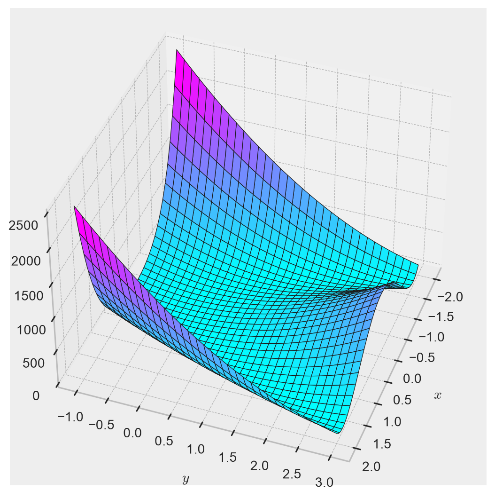
# Y creamos un gráfico de contorno completo para visualizar este mínimo global en 2D.
fig, ax = plt.subplots(figsize=(9, 7))
p = ax.contourf(X, Y, Z, levels=20, cmap="cool")
ax.set_xlabel(r"$x$", fontsize=12, labelpad=10)
ax.set_ylabel(r"$y$", fontsize=12, labelpad=10, rotation=0)
cb = plt.colorbar(p)
cb.set_label("Valor de z", fontsize=12, labelpad=10)
plt.tight_layout()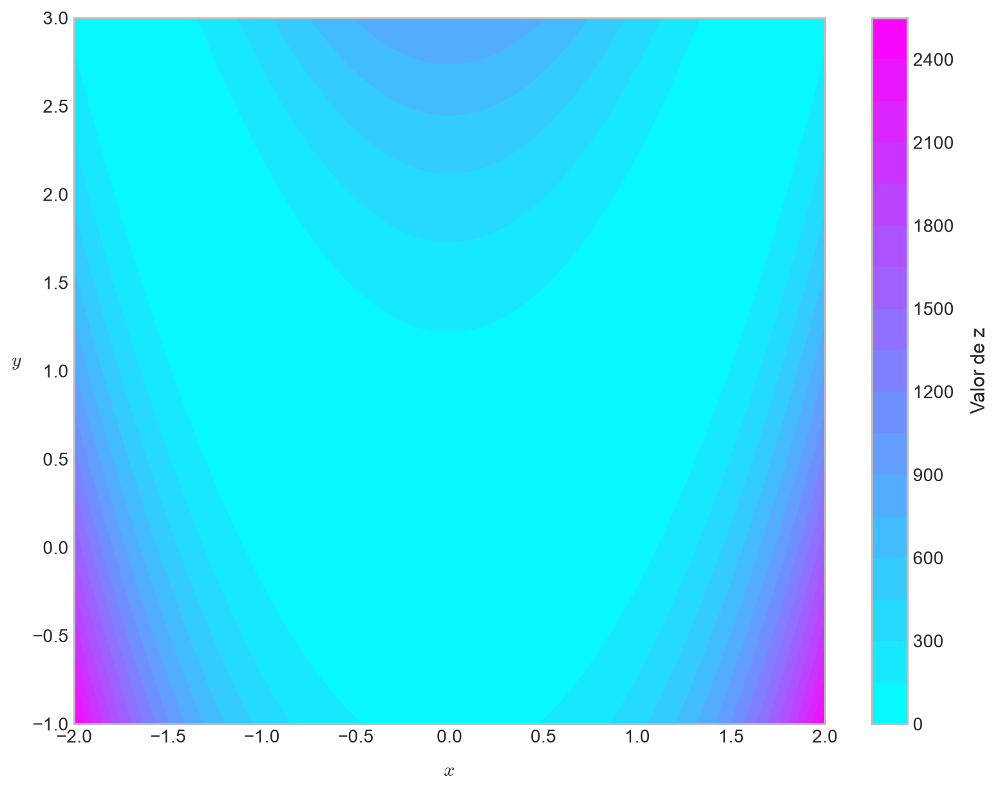
Podemos observar, a partir de los gráficos anteriores, por qué la función de Rosenbrock resulta muy útil en el benchmark de métodos numéricos de optimización. El mínimo global se encuentra dentro de una especie de valle cuya geometría es parabólica, muy estrecho y curvo. Los algoritmos a menudo pueden localizar el valle rápidamente, pero el valle es muy plano, lo que dificulta encontrar el punto exacto más bajo. Por lo tanto, las variables de entrada “conspiran” para que las búsquedas directas de este mínimo no funcionen bien, haciendo que los métodos basados en heurísticas simples oscilen o converjan muy lentamente.
Otra función famosa en el benchmark de métodos numéricos de optimización es la función de Rastrigin, definida como
\[ f\left( \mathbf{x} \right) =10n+\sum_{i=1}^{n} \left[ x_{i}^{2}-10\cos \left( 2\pi x_{i} \right) \right] \tag{6.62} \]
Esta función tampoco es convexa, y presenta un mínimo global en \(\mathbf{x}= \mathbf{0}\). Su gráfica se muestra a continuación:
# Definimos la función de Rastrigin para n = 2.
def rastrigin_2d(X, Y):
Z = 20 + X**2 + Y**2 - 10 * (np.cos(2*np.pi*X) + np.cos(2*np.pi*Y))
return Z# Definimos una grilla de búsqueda.
x = np.linspace(start=-5.14, stop=5.14, num=100)
y = np.linspace(start=-5.14, stop=5.14, num=100)
X, Y = np.meshgrid(x, y)
# Y obtenemos los valores del recorrido de la función en el dominio.
Z = rastrigin_2d(X, Y)# Graficamos la superficie resultante de esta función.
fig = plt.figure(figsize=(9, 7))
ax = plt.axes(projection='3d')
ax.plot_surface(X, Y, Z, rstride=5, cstride=5, edgecolor="k", cmap='cool')
ax.set_xlabel(r"$x$", fontsize=12, labelpad=10)
ax.set_ylabel(r"$y$", fontsize=12, labelpad=10)
ax.set_zlabel(r"$z$", fontsize=12, labelpad=10)
ax.view_init(40, 20)
plt.tight_layout()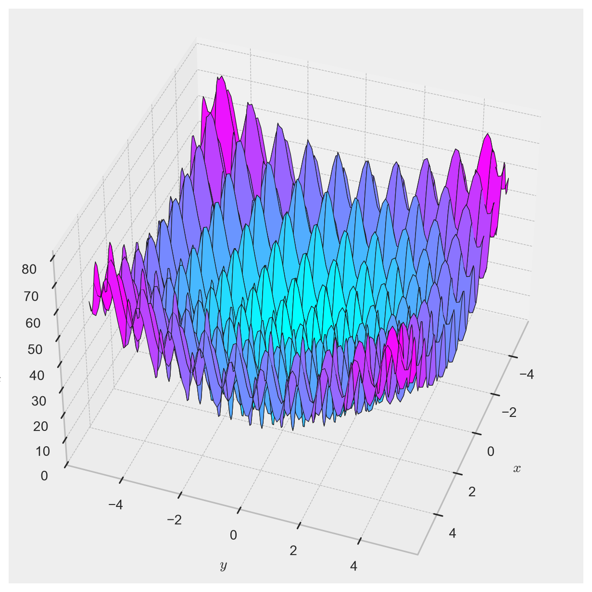
# Y creamos un gráfico de contorno completo para visualizar este mínimo global en 2D.
fig, ax = plt.subplots(figsize=(9, 7))
p = ax.contourf(X, Y, Z, levels=20, cmap='cool')
ax.set_xlabel(r"$x$", fontsize=12, labelpad=10)
ax.set_ylabel(r"$y$", fontsize=12, labelpad=10, rotation=0)
cb = plt.colorbar(p)
cb.set_label("Valor de z", fontsize=12, labelpad=10)
plt.tight_layout()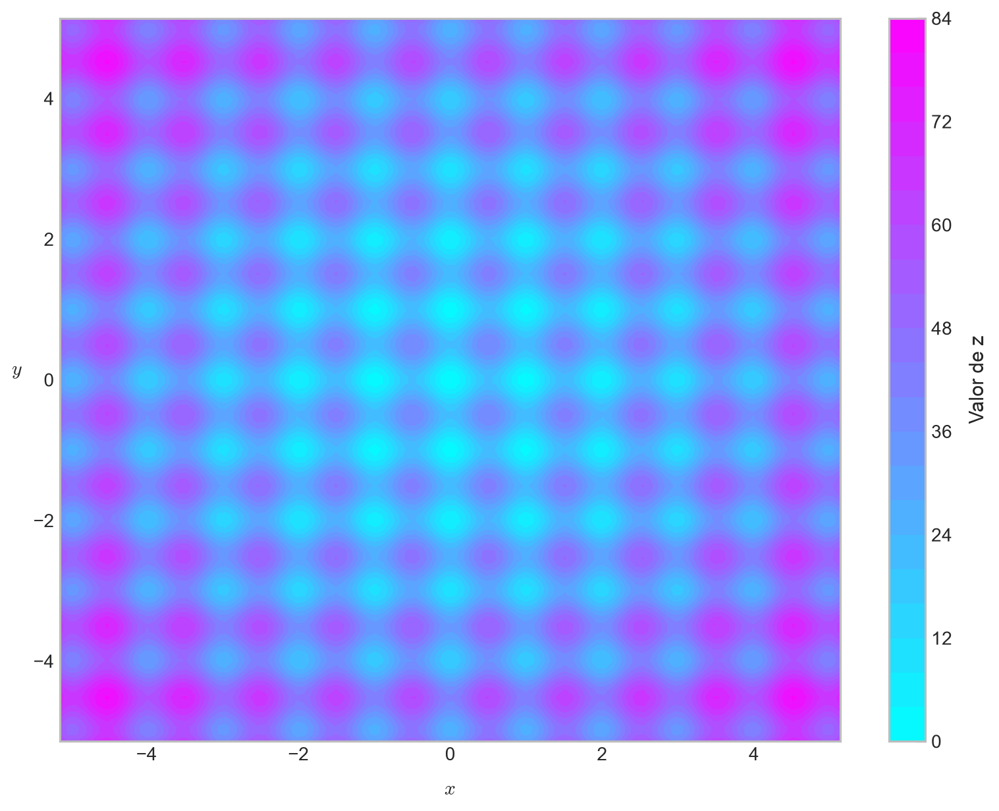
La función de Rastrigin se utiliza ampliamente en el benchmarking de métodos de optimización, particularmente para algoritmos metaheurísticos y evolutivos, debido a que es una función altamente multimodal y que presenta un desafío significativo para encontrar el mínimo global. Contiene una gran cantidad de mínimos locales repartidos por todo el espacio de búsqueda. Esto la convierte en un banco de pruebas ideal para evaluar la capacidad de un algoritmo para escapar de óptimos locales y no converger prematuramente.
6.5.1 Resolución de problemas no restringidos
En el módulo scipy.optimize, la función encargada de resolver problemas de optimización corresponde, en términos generales, a scipy.optimize.minimize() (en adelante, sólo minimize()). Esto nos obligará a que cualquier problema de optimización de interés se plantee conforme la búsqueda de un mínimo (ojalá global) de una función objetivo. Esto no representa ningún problema, puesto que, como comentamos antes, para problemas de maximización, siempre podremos realizar la conversión \(\max(f)=-\min(f)\), para toda función objetivo \(f\).
La función minimize() trabaja con varios argumentos, muchos de los cuales son opcionales debido a que no siempre será sencillo computar algunos de ellos. Como mínimo, debemos proveer dos parámetros:
fun: La función objetivo a evaluar. En este caso, proveemos la función directamente, ya que este argumento es de tipocallable. Por ejemplo, si la función objetivo fuera la función de Rastrigin que definimos previamente, bastará con usar sucallablecomo argumento. Es decir,rastrigin. La funciónfunsiempre debe ser del tipofun(x, **args), dondexes un arreglo de Numpy de geometría(n,)(dondenes el total de elementos del arreglo), y**argscorresponde a una tupla de parámetros estáticos que permiten especificar ciertos elementos de la función (y que, por extensión, resultan opcionales).x0: Corresponde a lo que formalmente se conoce como solución inicial. Los algoritmos de Scipy realizan una búsqueda sistemática de la solución óptima de un problema en un espacio determinado (llamado espacio de búsqueda). El valorx0corresponde al punto en el cual se inicia dicha búsqueda. En general, mientras más cercano esté dicho punto a la solución óptima, más sencillo le será al algoritmo alcanzar dicha solución.
Sumado a estos parámetros, hay varios argumentos opcionales que son de interés. El primero corresponde a method, y que detalla el tipo de algoritmo de optimización que se implementará para resolver nuestro problema. Existen muchos algoritmos que podemos escoger, y que podemos revisar en la documentación de Scipy. Algunos algoritmos detallados en el parámetro method admiten, además, la imputación de las derivadas parciales de la función objetivo cuando éstas son factibles de calcular, en la forma de la correspondiente matriz Jacobiana y la matriz Hessiana, usando los parámetros jac y hess, respectivamente.
Hay otros argumentos que serán de interés cuando agreguemos algo de complejidad a los problemas que deseemos resolver. Por el momento, para problemas no restringidos, ésto debería ser suficiente.
Ejemplo 6.8 – Optimización sin información del gradiente: Vamos a implementar la función minimize() para determinar el mínimo global de la función de Rosenbrock, definida previamente. Esto es tan sencillo como imputar la función como un callable y una solución inicial. Como sabemos el mínimo de la función de Rosenbrock se alcanza en el punto \(\mathbf{x^\star}=(1,...,1)\in \mathbb{R}^{n}\), tomaremos como solución inicial el punto \(\mathbf{x}_{0}=(2, 2, 2, 2, 2)\) y minimizaremos la función de Rosenbrock para el caso \(n=5\):
from scipy.optimize import minimize# Resolvemos el problema usando el algoritmo simplex de Nelder-Mead.
x0 = (2, 2, 2, 2, 2)
result = minimize(fun=rosenbrock, x0=x0, method="Nelder-Mead")Notemos que hemos imputado el argumento method="Nelder-Mead", lo que indica la implementación del algoritmo símplex de Nelder-Mead, el cual está diseñado para buscar el mínimo de una función objetivo \(f\) prescindiendo de la información de sus derivadas. La idea central del algorirtmo es esta: En vez de mirar un solo punto del dominio de \(f\), el algoritmo mantiene un pequeño grupo de puntos que forman una figura geométrica llamada símplex, el cual es el análogo multidimensional del triángulo. En tres dimensiones, es un tetraedro. En \(n\) dimensiones, se trata de una hipersuperficie con \(n+1\) vértices.
En cada iteración, el algoritmo evalúa la función \(f\) en esos vértices y compara sus valores. Así identifica cuál punto es el mejor, cuál es el peor y cuáles quedan en medio. Luego intenta mover el símplex hacia una región donde la función tome valores más pequeños, mediante algunos procedimientos geométricos sencillos:
- Primero, toma el peor punto y lo “empuja” hacia el lado opuesto del simplex. A esto se le llama reflexión. La intuición es simple: “Este vértice está en una zona mala; probemos al otro lado”.
- Si ese nuevo punto resulta ser muy bueno, el método intenta ir todavía más lejos en esa misma dirección. Eso se llama expansión.
- Si, en cambio, la reflexión no mejora mucho, el algoritmo prueba un movimiento más conservador, acercándose hacia la parte “buena” del símplex. Eso se llama contracción.
- Y, si nada de eso funciona, el simplex entero se hace más pequeño alrededor del mejor punto encontrado hasta ese momento. Eso se llama encogimiento.
La función minimize() entrega siempre sus resultados en un objeto del tipo scipy.optimize.OptimizeResult, y que es una especie de diccionario que aglutina toda la información relativa a la solución óptima encontrada por nuestro algoritmo. Por ejemplo, mediante la llave "x", podemos consultar la solución óptima encontrada por el algoritmo. Mediante la llave "fun", podemos consultar el valor mínimo de la función (evaluada en la solución óptima encontrada):
# Solución óptima y valor mínimo determinados por el algoritmo.
print(f"Solución óptima encontrada: {result['x']}")
print(f"Valor mínimo estimado: {result['fun']}")Solución óptima encontrada: [1.00000047 1.00000079 1.0000027 1.00000292 1.00000473]
Valor mínimo estimado: 8.815615550892453e-10Es claro que el algoritmo fue exitoso en su cometido, ya que ha encontrado la solución óptima del problema que hemos consultado. El estado del algoritmo podemos consultarlo siempre mediante la llave "status", y que corresponde a un número entero cuya codificación depende del algoritmo utilizado. Siempre podremos traducir este estado a palabras simples usando la llave "message":
# Estado del algoritmo.
print(f"Código de estado: {result['status']}")
print(f"Condición: {result['message']}")Código de estado: 0
Condición: Optimization terminated successfully.Finalmente, las llaves "nit" y "nfev" nos permiten consultar el número de iteraciones realizadas por el algoritmo respectivo y el número de evaluaciones de la función objetivo efectuadas en la búsqueda:
# Número de iteraciones y evaluaciones.
print(f"Número de iteraciones: {result['nit']}")
print(f"Número de evaluaciones: {result['nfev']}")Número de iteraciones: 423
Número de evaluaciones: 683Como dijimos peviamente, la cercanía de la solución inicial al mínimo global de la función objetivo influye en la calidad de la solución que el algoritmo es capaz de estimar:
# Probaremos distintas soluciones iniciales.
x01 = (2, 2, 2, 2, 2)
x02 = (6, 6, 6, 6, 6)
x03 = (20, 20, 20, 20, 20)
x04 = (60, 60, 60, 60, 60)
# Verificamos nuestros resultados.
for j, x0j in enumerate([x01, x02, x03, x04]):
result_j = minimize(fun=rosenbrock, x0=x0j, method="Nelder-Mead")
print(f"Solución óptima {j}: {result_j['x']}")Solución óptima 0: [1.00000047 1.00000079 1.0000027 1.00000292 1.00000473]
Solución óptima 1: [0.99999936 0.99999217 0.99998191 0.99996442 0.99993143]
Solución óptima 2: [1.05934698 1.13513758 1.29277997 1.66933821 2.78914569]
Solución óptima 3: [ 1.37904725 1.90288845 3.62261092 13.12679896 172.31749093]Notemos que el algoritmo de Nelder-Mead es capaz de aproximar razonablemente la solución óptima de nuestro problema únicamente cuando la solución inicial no es muy “lejana” al mínimo global de la función objetivo. Cuando es muy lejana, los resultados obtenidos son absolutamente incorrectos. Esto ocurre porque el algoritmo implementado es extremadamente sensible a la existencia de mínimos locales. Como resultado, es muy común que no sea capaz de hallar un mínimo global cuando la función objetivo es multimodal, resultando en divergencias. Por ejemplo, sabiendo que el mínimo global de la función de Rastrigin está en el origen, apliquemos el algoritmo simplex de Nelder-Mead a fin de verificar si es posible hallar dicho valor mediante su implementación:
# Definimos la función de Rastrigin para n dimensiones.
def rastrigin(x):
return 10 * x.shape[0] + np.sum(x ** 2 - 10 * np.cos(2 * x * np.pi))# Implementación del algoritmo simplex de Nelder-Mead sobre la función de Rastrigin.
result = minimize(fun=rastrigin, x0=x01, method="Nelder-Mead")
# Mostramos la solución óptima en pantalla.
print(f"Solución óptima: {result['x']}")
print(f"Valor mínimo de la función objetivo: {result['fun']}")Solución óptima: [1.98989201 1.98990361 1.98989773 1.98997022 1.98993487]
Valor mínimo de la función objetivo: 19.899156857239156Observamos pues que el algoritmo ha fallado incluso cuando la solución inicial estaba muy cerca del óptimo, debido, como comentamos antes, a la existencia de mínimos locales. ◼︎
Ejemplo 6.9 – Imputación del gradiente: Otros algoritmos pueden resultar más útiles en escenarios más desafiantes. Por ejemplo, el algoritmo BFGS (acrónimo de Broyden-Fletcher-Goldfarb-Shanno) puede aproximar el mínimo global de la función de Rosenbrock sin muchos problemas, incluso si el procedimiento de búsqueda del óptimo parte muy lejos de él:
# Implementación del algoritmo BFGS sobre la función de Rastrigin.
result = minimize(fun=rastrigin, x0=x01, method="BFGS")
# Mostramos la solución óptima en pantalla.
print(f"Solución óptima: {np.around(result['x'], 3)}")
print(f"Valor mínimo de la función objetivo: {result['fun']}")Solución óptima: [1.99 1.99 1.99 1.99 1.99]
Valor mínimo de la función objetivo: 19.899155952770485El algoritmo BFGS, a diferencia de Nelder-Mead, hace uso del gradiente de la función objetivo a fin de verificar cuál es la dirección en la cual ésta decrece, pero prescindiendo de la información asociada a la curvatura local de los puntos evaluados para dicha función que es provista por su matriz Hessiana. Este principio de búsqueda resulta común en muchas heurísticas de búsqueda populares. De hecho, uno de los algoritmos más utilizados en machine learning para la construcción de modelos predictivos es, precisamente, el algoritmo de gradiente descendente, el cual se basa en el mismo principio.
El problema de esta heurística es que la dirección de decrecimiento de la función objetivo, a partir de un punto crítico, puede no ser muy buena. A veces podemos caer en convergencias muy lentas o, incluso, comenzar a “zigzaguear”, sobre todo si el “valle” de la función (donde se ubica el mínimo) es angosto o está inclinado. El algoritmo BFGS intenta corregir esta “falla de diseño”. En vez de usar sólo el gradiente actual, va construyendo una aproximación de la curvatura de la función a medida que avanza. Esa curvatura es justamente la información que, en teoría, entrega la matriz Hessiana.
La imputación del gradiente en la función minimize() requiere construir explícitamente su definición funcional, con las mismas restricciones que precisamos a la hora de definir la función objetivo. Esto es, que el gradiente sea una función de un único argumento obligatorio que tome la forma de un arreglo de Numpy. Vamos a imputar esta información al algoritmo BFGS a fin de determinar el mínimo global de la función de Rosenbrock en \(\mathbb{R}^{n}\), conforme la definición mostrada en la ecuación (6.61). Podemos, con algo de esfuerzo, calcular las derivadas parciales de esta función como sigue:
Para \(i=1\):
\[ \begin{array}{lll}\dfrac{\partial f}{\partial x_{1}}&=&\dfrac{\partial}{\partial x_{1}} \left( 100\left( x_{2}-x_{1}^{2} \right)^{2} +\left( 1-x_{1} \right)^{2} \right)\\ &=&-400x_{1}\left( x_{2}-x_{1}^{2} \right) -2\left( 1-x_{1} \right)\end{array} \tag{6.63} \]
Para \(i=n\):
\[ \begin{array}{lll}\dfrac{\partial f}{\partial x_{n}}&=&\dfrac{\partial}{\partial x_{n}} \left( 100\left( x_{n}-x_{n-1}^{2} \right)^{2} \right)\\ &=&-200\left( x_{n}-x_{n-1}^{2} \right)\end{array} \tag{6.64} \]
Para \(1<i<n\):
\[ \begin{array}{lll}\dfrac{\partial f}{\partial x_{i}}&=&\dfrac{\partial}{\partial x_{i}} \left( 100\left( x_{i+1}-x_{i}^{2} \right)^{2} +\left( 1-x_{i} \right)^{2} +100\left( x_{i}-x_{i-1}^{2} \right)^{2} \right)\\ &=&-400x_{i}\left( x_{i+1}-x_{i}^{2} \right) -2\left( 1-x_{i} \right) +200\left( x_{i}-x_{i-1}^{2} \right)\end{array} \tag{6.65} \]
En resumen, juntando todo en una única expresión, tenemos que
\[ \dfrac{\partial f}{\partial x_{i}} =\begin{cases}-400x_{1}\left( x_{2}-x^{2}_{1}\right) -2\left( 1-x_{1}\right) &;\ \mathrm{s} \mathrm{i} \ i=1\\ -400x_{i}\left( x_{i+1}-x^{2}_{i}\right) -2\left( 1-x_{i}\right) +200\left( x_{i}-x^{2}_{i-1}\right) &;\ \mathrm{s} \mathrm{i} \ 1<i<n\\ 200\left( x_{n}-x^{2}_{n-1}\right) &;\ \mathrm{s} \mathrm{i} \ i=n\end{cases} \tag{6.66} \]
Y ya tenemos una expresión general para las derivadas parciales de nuestra función objetivo. Por lo tanto, podemos construir una función de Python que permita calcular el gradiente completo de la función de Rosenbrock como sigue:
# Definimos una función que computa el gradiente de la función de Rosenbrock.
def rosen_grad(x):
xm = x[1:-1]
xm_m1 = x[:-2]
xm_p1 = x[2:]
diff = np.zeros_like(x)
diff[1:-1] = 200*(xm - xm_m1**2) - 400*(xm_p1 - xm**2)*xm - 2*(1 - xm)
diff[0] = -400*x[0]*(x[1] - x[0]**2) - 2*(1 - x[0])
diff[-1] = 200*(x[-1] - x[-2]**2)
return diffY con esto, ya podemos incorporar esta información al algoritmo BFGS al buscar el mínimo global de la función de Rosenbrock:
# Implementación del algoritmo BFGS sobre la función de Rosenbrock, usando el gradiente de
# dicha función.
result = minimize(fun=rosenbrock, x0=x01, method="BFGS", jac=rosen_grad)
# Mostramos la solución óptima en pantalla.
print(f"Solución óptima: {np.around(result['x'], 3)}")
print(f"Valor mínimo de la función objetivo: {result['fun']}")Solución óptima: [1. 1. 1. 1. 1.]
Valor mínimo de la función objetivo: 2.4374759041348592e-14La solución óptima ahora es exacta gracias a esta nueva información.
La incorporación de los gradientes en el algoritmo de optimización no sólo permite asegurar, en el caso del algoritmo BFGS, una mejor solución, sino que además, un menor tiempo de ejecución. ◼︎
Ejemplo 6.10 – Imputación de la matriz Hessiana: En general, los algoritmos de optimización que son sensibles a la existencia de mínimos locales no mejorarán sus estimaciones cuando les incorporamos más información relativa a la función objetivo. El objetivo de la adición de información adicional, como el caso de gradientes (o matrices jacobianas, cuando la función objetivo es un campo vectorial) es llegar al óptimo más rápido, en menos iteraciones o con una menor cantidad de evaluaciones de la función objetivo.
Hay algoritmos que también nos exigen más información para resolver un problema de optimización. Un ejemplo es el algoritmo de gradiente conjugado de Newton (que, en el caso de la función minimize(), se expresa como "Newton-CG"). Dicho algoritmo plantea un procedimiento iterativo basado en la expresión
\[ \mathbf{x}^{\star}=\mathbf{x}_{0}-\mathbf{H}^{-1}(\mathbf{x})\nabla f(\mathbf{x}) \tag{6.67} \]
Donde \(\mathbf{x}_{0}\) es la solución inicial del algoritmo y \(\mathbf{H}(\mathbf{x})\) es la matriz Hessiana de \(f\) evaluada en el vector \(\mathbf{x}\).
La matriz Hessiana es el resultado de un cálculo que muchas veces eleva demasiado la complejidad de un problema de optimización. Para una función del tipo \(f:U\subseteq \mathbb{R}^{n} \longrightarrow \mathbb{R}\), definida en un conjunto abierto \(U\) de \(\mathbb{R}^{n}\), la matriz Hessiana estará compuesta por un total de \(n^{2}\) entradas que representarán las derivadas parciales de segundo orden de \(f\). Si nuestra función objetivo tiene \(10\) variables, calcular su matriz Hessiana implicará generar un arreglo con 100 entradas en total. Por lo tanto, podemos incluso pensar en la matriz Hessiana como un lujo que pocas veces nos podremos permitir pagar.
Para el caso de la función de Rosenbrock, podemos seguir un procedimiento similar al del gradiente para calcular las derivadas parciales de segundo orden que componen las entradas de la matriz Hessiana. En este caso, es buena idea derivar los casos para la primera fila, la última fila, y el resto de las filas de esta matriz. Luego, para la primera fila (es decir, para \(i=1\)):
Elemento diagonal (\(i=j=1\)):
\[ \begin{array}{lll}\dfrac{\partial^{2} f}{\partial x^{2}_{1}} &=& \dfrac{\partial }{\partial x_{1}} \left( -400x_{1}\left( x_{2}-x^{2}_{1}\right) -2\left( 1-x_{1}\right) \right) \\ &=&1200x^{2}_{1}-400x_{2}+2\end{array} \tag{6.68} \]
Elemento no diagonal (\(j=2\)):
\[ \begin{array}{lll}\dfrac{\partial^{2} f}{\partial x_{1}\partial x_{2}} &=& \dfrac{\partial }{\partial x_{2}} \left( -400x_{1}\left( x_{2}-x^{2}_{1}\right) \right) \\ &=&-400x_{1}\end{array} \tag{6.69} \]
Para la última fila (\(i=n\)):
Elemento diagonal (\(j=n\)):
\[ \begin{array}{lll}\dfrac{\partial^{2} f}{\partial x^{2}_{n}} &=&\dfrac{\partial }{\partial x_{n}} \left( 200\left( x_{n}-x^{2}_{n-1}\right) \right) \\ &=&200\end{array} \tag{6.70} \]
Elemento no diagonal (\(j=n-1\)):
\[ \begin{array}{lll} \dfrac{\partial^{2} f}{\partial x_{n}\partial x_{n-1}} &=& \dfrac{\partial }{\partial x_{n-1}} \left( 200\left( x_{n}-x^{2}_{n-1}\right) \right) \\ &=&-400x_{n-1}\end{array} \tag{6.71} \]
Para el resto de las filas (\(1<j<n\)):
Elemento diagonal (\(i=j\)):
\[ \begin{array}{lll} \dfrac{\partial^{2} f}{\partial x^{2}_{i}} &=& \dfrac{\partial }{\partial x_{i}} \left( -400x_{i}\left( x_{i+1}-x^{2}_{i}\right) -2\left( 1-x_{i}\right) +200\left( x_{i}-x^{2}_{i-1}\right) \right) \\ &=&1200x^{2}_{i}-400x_{i+1}+202\end{array} \tag{6.72} \]
Elemento no diagonal (\(j=i-1\)):
\[ \begin{array}{lll} \dfrac{\partial^{2} f}{\partial x_{i}x_{i-1}} &=& \dfrac{\partial }{\partial x_{i-1}} \left( 200\left( x_{i}-x^{2}_{i-1}\right) \right) \\ &=&-400x_{i-1}\end{array} \tag{6.73} \]
Elemento no diagonal (\(j=i+1\)):
\[ \begin{array}{lll} \dfrac{\partial^{2} f}{\partial x_{i}x_{i+1}} &=& \dfrac{\partial }{\partial x_{i+1}} \left( -400x_{i}\left( x_{i+1}-x^{2}_{i}\right) \right) \\ &=&-400x_{i}\end{array} \tag{6.74} \]
Juntando todo, podemos escribir finalmente la matriz Hessiana de la función de Rosenbrock como sigue:
\[ \mathbf{H} \left( \mathbf{x} \right) =\left( \begin{array}{ccccc}1200x^{2}_{1}-400x_{2}+2&-400x_{1}&0&\cdots &0\\ -400x_{1}&1200x^{2}_{2}-400x_{3}+202&-400x_{2}&\cdots &0\\ 0&-400x_{2}&1200x^{2}_{3}-400x_{4}+202&\cdots &0\\ \vdots &\vdots &\vdots &\ddots &\vdots \\ 0&0&0&\cdots &200\end{array} \right) \tag{6.75} \]
Con esta información, ya podemos definir esta matriz Hessiana por medio de una función de Python:
# Definimos la matriz Hessiana de la función de Rosenbrock.
def rosen_hessian(x):
x = np.asarray(x)
H = np.diag(-400*x[:-1], 1) - np.diag(400*x[:-1], -1)
diagonal = np.zeros_like(x)
diagonal[0] = 1200 * x[0] ** 2 - 400 * x[1] + 2
diagonal[-1] = 200
diagonal[1:-1] = 202 + 1200 * x[1:-1] ** 2 - 400 * x[2:]
H = H + np.diag(diagonal)
return HY podemos incorporarla a algoritmo conjugado de Newton para resolver el problema de determinar el mínimo global de la función de Rosenbrock. En esta oportunidad, añadiremos una impresión en pantalla de los resultados completos de la optimización por medio del argumento options, el cual corresponde a un diccionario que permite incorporar varias opciones adicionales que pueden resultar de interés en la resolución de nuestro problema. Una de ellas es la impresión en pantalla de los resultados de la optimización, vía el parámetro Booleano disp:
# Implementación del algoritmo conjugado de Newton sobre la función de Rosenbrock, usando el gradiente y
# la matriz Hessiana de dicha función.
result = minimize(
fun=rosenbrock, x0=x01, method="Newton-CG", jac=rosen_grad,
hess=rosen_hessian, options={'disp': True}
)
# Mostramos la solución óptima en pantalla.
print(f"Solución óptima: {np.around(result['x'], 3)}")
print(f"Valor mínimo de la función objetivo: {result['fun']}")Optimization terminated successfully.
Current function value: 0.000000
Iterations: 31
Function evaluations: 45
Gradient evaluations: 45
Hessian evaluations: 31
Solución óptima: [1. 1. 1. 1. 1.]
Valor mínimo de la función objetivo: 6.320424292631613e-10La incorporación de la matriz Hessiana permite ahorrar tiempo en la ejecución de un algoritmo de optimización, aunque no demasiado.
En general, los algoritmos de optimización implementados por defecto en la función minimize() no son capaces de garantizar la convergencia de tales procedimientos al mínimo global de la función objetivo. Por esta razón, para problemas no restringidos, los algoritmos simplex de Nelder-Mead, BFGS y de gradiente conjugado de Newton suelen constituir líneas base respecto de las cuales generamos contrastes en relación a algoritmos mucho más potentes, muchos de las cuales tienen su propia implementación en scipy.optimize. Ya nos ocuparemos de algunas implementaciones un poco más adelante. Por el momento, finalizaremos esta primera implementación de la función minimize() comentando que un algoritmo útil para la resolución de problemas de optimización con funciones objetivo multimodales es el método secuencial de programación vía mínimos cuadrados (sequental least squares programming, o SLSQP) y que es capaz de determinar el mínimo global de la función de Rastrigin en un espacio de búsqueda amplio. Recordemos que la función de Rastrigin tiene su mínimo global en el origen, y es igual a cero:
# Probaremos distintas soluciones iniciales.
x01 = (2, 2, 2, 2, 2)
x02 = (6, 6, 6, 6, 6)
x03 = (20, 20, 20, 20, 20)
x04 = (60, 60, 60, 60, 60)
# Determinamos el mínimo global de la función de Rastrigin mediante el algoritmo SLSQP para todas
# las soluciones iniciales anteriores.
for j, x0j in enumerate([x01, x02, x03, x04]):
result_j = minimize(fun=rastrigin, x0=x0j, method="SLSQP")
print(f"Solución óptima {j}: {np.around(result_j['x'], 3)}")Solución óptima 0: [0. 0. 0. 0. 0.]
Solución óptima 1: [0. 0. 0. 0. 0.]
Solución óptima 2: [0. 0. 0. 0. 0.]
Solución óptima 3: [0. 0. 0. 0. 0.]En general, el algoritmo SLSQP es una buena opción cuando deseamos resolver un problema de optimización no restringido rápidamente y no contamos con las derivadas de la función objetivo, ya sea porque éstas son muy costosas de computar, o bien, porque no podemos hacerlo.
Por supuesto, las opciones a nuestra disposición pueden cambiar enormemente si el problema a resolver presenta restricciones. Esto es lo que abordaremos a continuación. ◼︎
6.5.2 Problemas restringidos
Como cabría esperar, el asunto cambia completamente cuando queremos resolver problemas de optimización que cuentan con un número arbitrario de restricciones. En un caso así, dependiendo del algoritmo escogido, tendremos que definir ciertos objetos que jugarán el papel de dichas restricciones.
Para este caso, vamos a intentar resolver el siguiente problema, donde la función objetivo es la función de Rosenbrock en dos dimensiones:
\[ \begin{array}{ll}\displaystyle \min_{\left( x_{1},x_{2}\right) } &100\left( x_{2}-x^{2}_{1}\right)^{2} +\left( 1-x_{1}\right)^{2} \\ \mathrm{s} .\mathrm{a} .:&x_{1}+2x_{2}\leq 1\\ &x^{2}_{1}+x_{2}\leq 1\\ &x^{2}_{1}-x_{2}\leq 1\\ &2x_{1}+x_{2}=1\\ &0\leq x_{1}\leq 1\\ &-\frac{1}{2} \leq x_{2}\leq 2\end{array} \tag{6.76} \]
A fin de entender el efecto de todas las restricciones, construiremos un gráfico que permite identificar el espacio de soluciones factibles del problema (6.76):
# Generamos una grilla donde evaluaremos la función objetivo y sus restricciones.
x1 = np.linspace(-0.1, 1.1, 600)
x2 = np.linspace(-0.6, 2.1, 600)
X1, X2 = np.meshgrid(x1, x2)
# Definimos las restricciones del problema.
c1 = X1 + 2*X2 <= 1
c2 = X1**2 + X2 <= 1
c3 = X1**2 - X2 <= 1
c4 = np.isclose(2*X1 + X2, 1, atol=2e-3) # (sólo para visualizar la igualdad).
c5 = (X1 >= 0) & (X1 <= 1)
c6 = (X2 >= -0.5) & (X2 <= 2)
# Factibilidad sin imponer aún la igualdad estricta.
feas_ineq = c1 & c2 & c3 & c5 & c6
# Segmento factible exacto.
x1_seg = np.linspace(1/3, np.sqrt(3) - 1, 300)
x2_seg = 1 - 2*x1_seg
# Extremos de dicho segmento.
p_left = (1/3, 1 - 2*(1/3))
p_right = (np.sqrt(3) - 1, 1 - 2*(np.sqrt(3) - 1))# Visualizamos el espacio de soluciones factibles.
fig, ax = plt.subplots(figsize=(9, 7), dpi=90)
# Sombreado de la región que satisface las desigualdades.
ax.contourf(
X1, X2, feas_ineq.astype(int),
levels=[0.5, 1.5],
alpha=0.18
)
# Fronteras de las restricciones.
ax.plot(x1, (1 - x1)/2, linewidth=2, label=r"$x_1 + 2x_2 = 1$")
ax.plot(x1, 1 - x1**2, linewidth=2, label=r"$x_1^2 + x_2 = 1$")
ax.plot(x1, x1**2 - 1, linewidth=2, label=r"$x_1^2 - x_2 = 1$")
ax.plot(x1, 1 - 2*x1, "k--", linewidth=2.2, label=r"$2x_1 + x_2 = 1$")
# Cotas de tipo "caja".
ax.axvline(0, linestyle=":", linewidth=1.5, label=r"$x_1=0$")
ax.axvline(1, linestyle=":", linewidth=1.5, label=r"$x_1=1$")
ax.axhline(-0.5, linestyle=":", linewidth=1.5, label=r"$x_2=-1/2$")
ax.axhline(2, linestyle=":", linewidth=1.5, label=r"$x_2=2$")
# Segmento factible final.
ax.plot(
x1_seg, x2_seg,
color="crimson",
linewidth=4,
label="Espacio factible"
)
# Extremos.
ax.scatter(
[p_left[0], p_right[0]],
[p_left[1], p_right[1]],
color="crimson",
s=60,
zorder=5
)
# Anotaciones asociadas.
ax.annotate(
r"$\left(\frac{1}{3},\frac{1}{3}\right)$",
xy=p_left,
xytext=(10, 10),
textcoords="offset points",
fontsize=11
)
ax.annotate(
r"$\left(\sqrt{3}-1,\ 3-2\sqrt{3}\right)$",
xy=p_right,
xytext=(10, -18),
textcoords="offset points",
fontsize=11
)
# Añadimos algunos elementos estéticos.
ax.set_xlim(-0.05, 1.05)
ax.set_ylim(-0.6, 2.05)
ax.set_xlabel(r"$x_1$", fontsize=12)
ax.set_ylabel(r"$x_2$", fontsize=12)
ax.legend(loc="upper right", frameon=True)
ax.grid(True, alpha=0.25)
plt.tight_layout()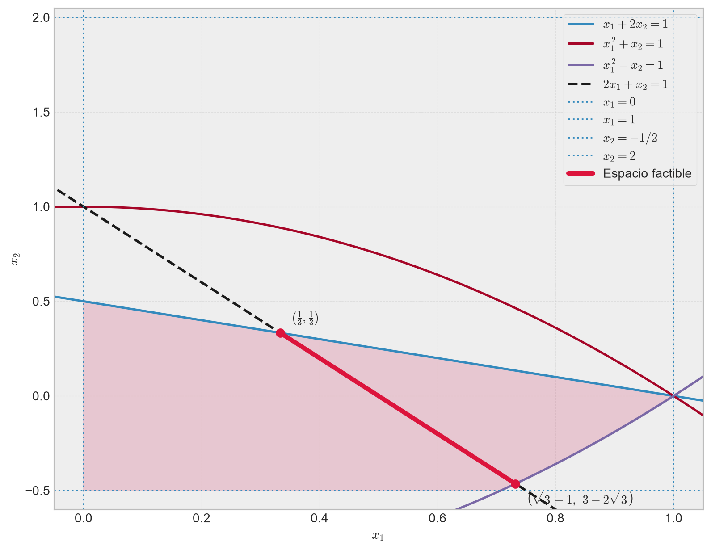
El gráfico anterior da cuenta de que varias de las restricciones planteadas en el problema son redundantes. Sólo aquellas que limitan el espacio de soluciones factibles serán aquellas que cualquier algoritmo utilizará como base para la búsqueda de una solución óptima. El resto pueden ser ignoradas.
La solución óptima de este problema es \((x_{1}, x_{2})=(0.4149, 0.1701)\).
Para la resolución de un problema restringido mediante la función minimize(), es bueno separar los casos en función de la información de la que dispongamos. En algunos casos (como el del presente ejemplo), podremos computar varios elementos matriciales requeridos por algunos algoritmos de optimización. En otros casos, no será tan sencillo. Por esa razón, es buena idea fragmentar nuestro problema y reconocer los tipos de restricciones asociadas a él.
(a) Condiciones de frontera: Las condiciones de frontera permiten limitar el espacio de soluciones factibles de un problema de optimización mediante el uso de constantes y son del tipo \(a_{i}\leq x_{i}\leq b_{i}\). En el problema (6.76) hay dos de estas restricciones: \(0\leq x_{1}\leq 1\) y \(-\frac{1}{2}\leq x_{2}\leq 2\). En scipy.optimize, tales restricciones se pueden expresar mediante el uso de la clase Bounds, imputando en un formato de listas las cotas inferiores de cada una, y luego las cotas superiores:
from scipy.optimize import Bounds# Definimos las condiciones de frontera.
bounds = Bounds([0.0, -0.5], [1.0, 2.0])(b) Restricciones lineales: Las restricciones lineales pueden escribirse conforme una notación matricial, de manera similar a como escribimos compactamente un sistema de ecuaciones lineales. Así, para el caso del problema (6.76), las dos restricciones lineales existentes pueden escribirse como sigue:
\[ \begin{array}{rll}x_{1}+2x_{2}&\leq &1\\ 2x_{1}+x_{2}&=&1\end{array} \ \Longrightarrow \ \left( \begin{array}{c}-\infty \\ 1\end{array} \right) \leq \left( \begin{array}{cc}1&2\\ 2&1\end{array} \right) \left( \begin{array}{c}x_{1}\\ x_{2}\end{array} \right) \leq \left( \begin{array}{c}1\\ 1\end{array} \right) \tag{6.77} \]
Dada la expresión matricial anterior, es posible imputar las restricciones lineales de un problema de optimización mediante el uso de la clase LinearConstraint:
from scipy.optimize import LinearConstraint# Definimos las restricciones lineales del problema.
linear_constraint = LinearConstraint([[1, 2], [2, 1]], [-np.inf, 1], [1, 1])Notemos que el orden de imputación de las restricciones, considerando la notación matricial (6.77), es: Matriz de coeficientes de las restricciones, cotas inferiores, cotas superiores.
(c) Restricciones no lineales: Para el caso de restricciones no lineales, cuando éstas son de tipo polinómicas, también es posible reescribirlas matricialmente, de la misma forma que lo haríamos para un sistema no lineal de ecuaciones. De esta manera, para el caso del problema (6.76), las dos restricciones no lineales existentes pueden escribirse como:
\[ c(x_{1}, x_{2}) =\left( \begin{array}{c}x^{2}_{1}+x_{2}\\ x^{2}_{1}-x_{2}\end{array} \right) \leq \left( \begin{array}{c}1\\ 1\end{array} \right) \tag{6.78} \]
Cuya matriz jacobiana \(\mathbf{J}(x_{1},x_{2})\) es
\[ \mathbf{J} \left( x_{1},x_{2}\right) =\left( \begin{array}{cc}\displaystyle \frac{\partial c_{1}\left( x_{1},x_{2}\right) }{\partial x_{1}} &\displaystyle \frac{\partial c_{1}\left( x_{1},x_{2}\right) }{\partial x_{2}} \\ \displaystyle \frac{\partial c_{2}\left( x_{1},x_{2}\right) }{\partial x_{1}} &\displaystyle \frac{\partial c_{2}\left( x_{1},x_{2}\right) }{\partial x_{2}} \end{array} \right) =\left( \begin{array}{cc}2x_{1}&1\\ 2x_{1}&-1\end{array} \right) \tag{6.79} \]
Por otro lado, la matriz Hessiana de \(c(x_{1},x_{2})\) puede generarse a partir de la siguiente combinación lineal:
\[ \mathbf{H} \left( \mathbf{v} ,\mathbf{x} \right) =v_{1}\underbrace{\nabla^{2} c_{1}\left( x_{1},x_{2}\right) }_{\frac{\partial^{2} c_{1}\left( x_{1},x_{2}\right) }{\partial x^{2}_{1}} +\frac{\partial^{2} c_{1}\left( x_{1},x_{2}\right) }{\partial x^{2}_{2}} } +v_{2}\underbrace{\nabla^{2} c_{2}\left( x_{1},x_{2}\right) }_{\frac{\partial^{2} c_{2}\left( x_{1},x_{2}\right) }{\partial x^{2}_{1}} +\frac{\partial^{2} c_{2}\left( x_{1},x_{2}\right) }{\partial x^{2}_{2}} } =v_{1}\left( \begin{array}{cc}2&0\\ 0&0\end{array} \right) +v_{2}\left( \begin{array}{cc}2&0\\ 0&0\end{array} \right) \tag{6.80} \]
Dados los cálculos anteriores, podemos imputar las restricciones no lineales del problema por medio del objeto NonlinearConstraint de scipy.optimize, definiendo previamente las funciones anteriores en Python:
from scipy.optimize import NonlinearConstraint# Definimos explícitamente las restricciones no lineales, por medio de su
# ecuación matricial, su matriz Jacobiana y su matriz Hessiana.
def cons_f(x):
return [x[0]**2 + x[1], x[0]**2 - x[1]]
def cons_J(x):
return [[2*x[0], 1], [2*x[0], -1]]
def cons_H(x, v):
return v[0]*np.array([[2, 0], [0, 0]]) + v[1]*np.array([[2, 0], [0, 0]])# Y definimos nuestra restricción no lineal.
nonlinear_constraint = NonlinearConstraint(cons_f, -np.inf, 1, jac=cons_J, hess=cons_H)Y ya estamos en condiciones de resolver el problema (6.76) por medio de la función minimize(). Optaremos en este caso por un algoritmo de resolución conocido como optimización basada en regiones de confianza (en inglés, trust-region optimization), y que suele emplearse para la resolución de problemas no lineales generales definiendo primeramente un entorno alrededor del mínimo global de la función objetivo, llamado región de confianza, en cada iteración. La idea es simple: En vez de confiar en que nuestro modelo local de la función sirve en todo el espacio, sólo confiamos en él dentro de esa región de confianza.
Procedemos como sigue:
# Definimos la solución de inicio.
x0 = np.array([0, 0.5])
# Resolvemos el problema.
result = minimize(
fun=rosenbrock, x0=x0, method="trust-constr",
jac=rosen_grad, hess=rosen_hessian,
constraints=[linear_constraint, nonlinear_constraint],
options={"verbose": 1}, bounds=bounds
)
# Mostramos la solución óptima del problema.
print(f"Solución óptima: {np.around(result['x'], 4)}")
print(f"Valor mínimo de la función objetivo: {np.around(result['fun'], 4)}")`gtol` termination condition is satisfied.
Number of iterations: 12, function evaluations: 8, CG iterations: 7, optimality: 2.99e-09, constraint violation: 0.00e+00, execution time: 0.006 s.
Solución óptima: [0.4149 0.1701]
Valor mínimo de la función objetivo: 0.3427Y ahí lo tenemos. Hemos resuelto nuestro problema.
Las definiciones anteriores de las restricciones fueron indudablemente un tanto engorrosas, pero necesarias para describir el problema de optimización a cabalidad. Sin embargo, es posible ahorrarnos algo de trabajo si nos vemos enfrentados a un problema cuyas restricciones no lineales tengan una matriz Hessiana muy costosa (en términos computacionales) de evaluar. Para ello, podemos hacer uso de estrategias de aproximación de esta matriz que están disponibles en scipy.optimize. Un ejemplo es la estrategia BFGS (sí, de los mismos autores del algoritmo BFGS):
from scipy.optimize import BFGS# Redefinimos nuestras restricciones no lineales.
nonlinear_constraint = NonlinearConstraint(cons_f, -np.inf, 1, jac=cons_J, hess=BFGS())
# Resolvemos el problema.
result = minimize(
fun=rosenbrock, x0=x0, method="trust-constr",
jac=rosen_grad, hess=rosen_hessian,
constraints=[linear_constraint, nonlinear_constraint],
options={"verbose": 1}, bounds=bounds
)
# Mostramos la solución óptima del problema.
print(f"Solución óptima: {np.around(result['x'], 4)}")
print(f"Valor mínimo de la función objetivo: {np.around(result['fun'], 4)}")`gtol` termination condition is satisfied.
Number of iterations: 13, function evaluations: 9, CG iterations: 8, optimality: 2.99e-09, constraint violation: 0.00e+00, execution time: 0.0071 s.
Solución óptima: [0.4149 0.1701]
Valor mínimo de la función objetivo: 0.3427Otra estrategia corresponde a la actualización de la matriz Hessiana por medio de diferencias finitas en 2D, lo que es posible directamente sobre el objeto NonlinearConstraint:
# Redefinimos nuestras restricciones no lineales.
nonlinear_constraint = NonlinearConstraint(cons_f, -np.inf, 1, jac=cons_J, hess="2-point")
# Resolvemos el problema.
result = minimize(
fun=rosenbrock, x0=x0, method="trust-constr",
jac=rosen_grad, hess=rosen_hessian,
constraints=[linear_constraint, nonlinear_constraint],
options={"verbose": 1}, bounds=bounds
)
# Mostramos la solución óptima del problema.
print(f"Solución óptima: {np.around(result['x'], 4)}")
print(f"Valor mínimo de la función objetivo: {np.around(result['fun'], 4)}")`gtol` termination condition is satisfied.
Number of iterations: 12, function evaluations: 8, CG iterations: 7, optimality: 2.99e-09, constraint violation: 0.00e+00, execution time: 0.0067 s.
Solución óptima: [0.4149 0.1701]
Valor mínimo de la función objetivo: 0.3427En ambos casos, hemos resuelto el problema (6.76).
La matriz Jacobiana asociada a las restricciones no lineales también puede aproximarse por medio de diferencias finitas 2D. Sin embargo, si lo hacemos, ya no podremos aproximar la matriz Hessiana mediante dicho medio y tendremos que recurrir al uso del objeto BFGS usado en primera instancia:
# Redefinimos nuestras restricciones no lineales.
nonlinear_constraint = NonlinearConstraint(cons_f, -np.inf, 1, jac="2-point", hess=BFGS())
# Resolvemos el problema.
result = minimize(
fun=rosenbrock, x0=x0, method="trust-constr",
jac=rosen_grad, hess=rosen_hessian,
constraints=[linear_constraint, nonlinear_constraint],
options={"verbose": 1}, bounds=bounds
)
# Mostramos la solución óptima del problema.
print(f"Solución óptima: {np.around(result['x'], 4)}")
print(f"Valor mínimo de la función objetivo: {np.around(result['fun'], 4)}")`gtol` termination condition is satisfied.
Number of iterations: 13, function evaluations: 9, CG iterations: 8, optimality: 2.99e-09, constraint violation: 0.00e+00, execution time: 0.0069 s.
Solución óptima: [0.4149 0.1701]
Valor mínimo de la función objetivo: 0.3427Y con esto, también hemos resuelto el problema (6.76).
Alternativamente, también es posible aproximar las derivadas de la función objetivo (representadas por su gradiente y matriz Hessiana, respectivamente) mediante estrategias similares. Por ejemplo, podemos usar diferencias finitas para aproximar el gradiente, y una estrategia de actualización de tipo “SR1” (aproximación matricial simétrica de rango 1) para la matriz Hessiana:
from scipy.optimize import SR1# Resolvemos el problema mediante aproximaciones del gradiente y la matriz Hessiana de la
# función objetivo.
result = minimize(
fun=rosenbrock, x0=x0, method="trust-constr",
jac="2-point", hess=SR1(),
constraints=[linear_constraint, nonlinear_constraint],
options={"verbose": 1}, bounds=bounds
)
# Mostramos la solución óptima del problema.
print(f"Solución óptima: {np.around(result['x'], 4)}")
print(f"Valor mínimo de la función objetivo: {np.around(result['fun'], 4)}")`gtol` termination condition is satisfied.
Number of iterations: 12, function evaluations: 24, CG iterations: 7, optimality: 4.28e-09, constraint violation: 0.00e+00, execution time: 0.0059 s.
Solución óptima: [0.4149 0.1701]
Valor mínimo de la función objetivo: 0.3427Y con esto también hemos resuelto el problema (6.76).
Si nos resulta un tanto complicado definir las restricciones como lo hicimos previamente, hay otros algoritmos que permiten estandarizar más fácilmente tales definiciones. Un ejemplo es el algoritmo SLSQP, que nos exige definir las restricciones de igualdad y desigualdad del problema por medio de diccionarios cuyas llaves son: "type", que corresponde al tipo de restricción ("eq" para las restricciones de igualdad, e "ineq" para las restricciones de desigualdad); "fun", que corresponde a un arreglo que define las ecuaciones que representan cada restricción (fila a fila); y "jac", que corresponde a la matriz Jacobiana asociada a las restricciones:
# Restricciones de desigualdad.
ineq_cons = {
'type': 'ineq',
'fun' : lambda x: np.array(
[
1 - x[0] - 2*x[1],
1 - x[0]**2 - x[1],
1 - x[0]**2 + x[1]
]
),
'jac' : lambda x: np.array(
[
[-1.0, -2.0],
[-2*x[0], -1.0],
[-2*x[0], 1.0]
]
)
}
# Restricciones de igualdad.
eq_cons = {
'type': 'eq',
'fun' : lambda x: np.array([2*x[0] + x[1] - 1]),
'jac' : lambda x: np.array([2.0, 1.0])
}Y ya podemos resolver nuestro problema:
# Resolvemos el problema.
result = minimize(
fun=rosenbrock, x0=x0, method="SLSQP",
jac="2-point", constraints=[eq_cons, ineq_cons],
options={"disp": True}, bounds=bounds
)
# Y mostramos su solución óptima.
print(f"Solución óptima: {np.around(result['x'], 4)}")
print(f"Valor mínimo de la función objetivo: {np.around(result['fun'], 4)}")Optimization terminated successfully (Exit mode 0)
Current function value: 0.3427175748732819
Iterations: 5
Function evaluations: 19
Gradient evaluations: 5
Solución óptima: [0.4149 0.1701]
Valor mínimo de la función objetivo: 0.3427Y ahí lo tenemos. Problema resuelto, con mucho menos trabajo.
6.6 Comentarios finales
A lo largo de este apunte hemos visto que la teoría de optimización no debe entenderse únicamente como un conjunto de técnicas algorítmicas para “buscar mínimos”, sino como un marco matemático general para formular y resolver problemas de decisión bajo criterios de desempeño y restricciones. Esta idea resulta especialmente importante en machine learning, donde el entrenamiento de modelos, la calibración de parámetros, la regularización y el ajuste de funciones de pérdida pueden interpretarse, en esencia, como problemas de optimización.
El recorrido seguido en esta sección muestra además que la dificultad de un problema de optimización no depende solamente de la forma explícita de su función objetivo, sino también de la geometría del espacio factible, de la existencia de restricciones activas, de la presencia de mínimos locales y, por supuesto, del tipo de información analítica disponible. En algunos casos, el gradiente y la matriz Hessiana permiten caracterizar de manera precisa la estructura local de un problema; en otros, en cambio, sólo disponemos de evaluaciones puntuales de una función objetivo, lo que obliga a recurrir a métodos numéricos más generales o incluso a enfoques de optimización de tipo black-box.
Otro aspecto central de este apunte es la distinción entre resultados estructurales y procedimientos computacionales. Por un lado, los criterios de primer y segundo orden, el método de los multiplicadores de Lagrange, las condiciones KKT y la teoría de dualidad permiten entender cuándo una solución candidata puede considerarse óptima, y bajo qué hipótesis dicha optimalidad puede certificarse rigurosamente. Por otro lado, algoritmos como Nelder–Mead, BFGS, Newton, trust-region o SLSQP ilustran cómo estas ideas pueden llevarse a la práctica mediante herramientas computacionales concretas.
Finalmente, conviene subrayar el papel privilegiado que juegan los problemas convexos. La convexidad aparece en este contexto como una propiedad geométrica especialmente fuerte, porque elimina ambigüedades locales, asegura la coincidencia entre mínimos locales y globales, y permite que la teoría de KKT y la dualidad fuerte encajen de manera particularmente elegante. En este sentido, una parte importante del diseño moderno de modelos en ciencia de datos y aprendizaje automático consiste precisamente en construir formulaciones que preserven, en la medida de lo posible, esta estructura favorable.